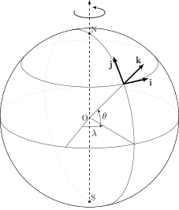
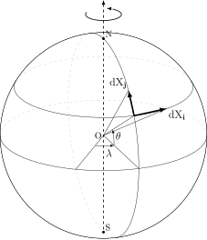

Chapter 2 of the thesis, transcribed verbatim (equations kept as printed, errors included). Review remarks are given as footnotes in colour; they do not modify the text.
Chapter 2 — Location Uncertainty Principle
Abstract. This chapter aims to introduce the stochastic framework of Location Uncertainty. The presentation is detailed while being free of stochastic calculus as much as possible, with only physical arguments and procedures that are well established in the fluid mechanics practice. The interested reader is however invited to refer to the last section of this chapter to find the mathematical proof of every important formula.
2.1 Location uncertainty
In the Location Uncertainty (LU) formalism, the Lagrangian displacement \(\mathbf{X}_t\) associated to a fluid particle is described by a stochastic differential equation of the type:
where \(\mathbf{X}_t:\Omega\times\mathbb{R}^+\to\Omega\) is the fluid flow map, that is the trajectory followed by a fluid particle starting at point \(\mathbf{X}|_{t=0}(\boldsymbol{x})=\boldsymbol{x}_0\) of the bounded domain \(\Omega\) and the index \(i=1,\dots,3\) indicates the spatial coordinates \(x,y,z\). The first component, \(\boldsymbol{v}\) in vector form, represents the smooth, resolved velocity field of the flow. This term is the response of the equations of motions, solved on a grid of a given resolution, and so it is supposed to be both spatially and temporally correlated. Its integral in time is assumed to be of bounded variation. The second term, that we will indicate as \(\boldsymbol{\sigma}_t\mathrm{d}\mathbf{B}_t\) in vector form, is a stochastic process that assembles the unresolved component, turbulent effects and the uncertainties of the flow. This stochastic contribution is referred to as noise and defined as
that is the application of an integration kernel \(\breve{\sigma}\) to an \(I_3\) cylindrical Wiener process \(\mathbf{B}_t\), combination of independent one-dimensional cylindrical Wiener processes, not differentiable in time. In the previous equation, Einstein's summation notation was adopted. The result of such operation is a centred Gaussian process with two-points, two-times covariance tensor defined as
meaning that \(\boldsymbol{\sigma}_t\mathrm{d}\mathbf{B}_t\sim\mathcal{N}(0,\boldsymbol{K})\). Further details on the properties of the noise are given in chapter 3. The strength of the noise is measured by its one-point, one-time covariance, denoted as \(\boldsymbol{a}\), given by the diagonal components of the covariance tensor per unit of time, that is
From the relation \(\boldsymbol{a}(\boldsymbol{x},t)=\boldsymbol{\sigma}_t(\boldsymbol{x})\boldsymbol{\sigma}_t^{\mathrm{T}}(\boldsymbol{x})\) it is important to recognize that the variance tensor is symmetric and positive semi-definite at any point \(\boldsymbol{x}\) of the domain, property that will be employed in the construction of the stochastic Reynolds transport theorem. From this construction it emerges the fact that the displacement is an Itô diffusion process, and in the following it will be intensively used in its vector form:
$$\mathrm{d}\mathbf{X}_t(\mathbf{X}_0) = \boldsymbol{v}(\mathbf{X}_t,t)\,\mathrm{d} t + \boldsymbol{\sigma}_t\mathrm{d}\mathbf{B}_t(\mathbf{X}_t). \tag{2.5}$$
It is important to state that the expressions contained in (2.1) and (2.5) are shortcut notations for the integral relations:
with \(\mathbf{X}_0\) initial condition for the flow. These equations constitute the real mathematical description of the stochastic process as a semi-martingale (Kunita, 1997; Da Prato et al., 2014; Brémaud, 2020), defined for each point of \(\boldsymbol{x}\in\Omega\) and each time \(t\in T\subseteq\mathbb{R}^+\). A total velocity can then be formally defined as
where the uncertainty term \(\mathrm{d}\mathbf{B}_t\) is not differentiable in time in the classical sense and so its derivative \(\dot{\mathbf{B}}_t\) must be thought in terms of weak derivatives, that is
$$\int_T \varphi(t)\,\dot{\mathbf{B}}_t(\boldsymbol{x})\,\mathrm{d} t = -\int_T \varphi'(t)\,\mathbf{B}_t(\boldsymbol{x})\,\mathrm{d} t \qquad \forall\varphi\in C_0^\infty(T). \tag{2.8}$$
From the physical point of view, \(\boldsymbol{v}\) is a smooth-in-time random velocity, while \(\boldsymbol{\sigma}_t\dot{\mathbf{B}}_t\) represents the noise: a generalized stochastic process that has to be defined in the space of tempered distributions. As introduced, the noise term \(\boldsymbol{\sigma}_t\mathrm{d}\mathbf{B}_t\) is defined as centred, that means \(\boldsymbol{\sigma}_t\mathrm{d}\mathbf{B}_t\sim\mathcal{N}(0,\boldsymbol{K})\), with \(\mathbf{B}\) an \(I_3\)–Wiener process defined on a filtered probability space \(\{\Omega,\mathcal{F},\mathbb{P},(\mathcal{F}_t)_t\}\) and where \((\mathcal{F}_t)_t\) is the filtration associated with \(\mathbf{B}_t\). However, the following argument opens to a useful generalisation of non-centred noises, used extensively in Chapter 3. Let \((\mathcal{F}_t)_t\) be the filtration associated with \((\mathbf{B}_t)_t\). A non centred Wiener process shifted by a random process \((\mathbf{Y}_t)_t\) can be defined as:
$$\tilde{\mathbf{B}}_t = \mathbf{B}_t + \int_0^t \mathbf{Y}_s\,\mathrm{d} s. \tag{2.9}$$
Under good properties of \((\mathbf{Y}_t)_t\) (\(\mathcal{F}_t\)-measurability, almost sure \(L^2\)–integrability and Novikov condition) there exists a measure Q such that:
\((\tilde{\mathbf{B}}_t)_t\) is a Q–Wiener process;
the Radon-Nikodym derivative (which is well defined due to Novikov condition (Brémaud, 2020; Da Prato et al., 2014) writes:
Under Q the Wiener process \(\mathrm{d}\tilde{\mathbf{B}}_t\) is centred thus the writing of \(\mathrm{d}\mathbf{X}_t\) has the same form as (2.5) but under a new measure. All the arguments provided in the following will hold for this process under \(\mathbb{Q}\). Hence every term built on the displacement (Coriolis, metric terms) must carry \(-\boldsymbol{\mu}_t\,\mathrm{d} t\) when the noise is sampled as the centred \(\tilde{\mathbf{B}}_t\) (in the code, the sign conventions of the bias, gsvSign and biaSign, must match this \(-\boldsymbol{\mu}_t\)).
2.2 Stochastic transport theorem
This section highlights the effects of the scale separation introduced in the previous section. In particular, the Stochastic Reynolds Transport Theorem (SRTT), that provides an Eulerian representation to the Lagrangian flow described, is introduced without proof (that is provided in Section 2.9). With respect to the classical Reynolds Transport Theorem, the additional complexity is inherited by the one-dimensional cylindrical Wiener processes \(\mathrm{B}^k_t(\boldsymbol{x})\), used to separate the scales of motion, that is not differentiable in time, and so it requires special care when left evolving in time. Let's consider a semi-martingale \(q(\boldsymbol{x},t)\) of the type
where \(g\) and \(f_k\) are bounded variation processes; the integral of \(g\) in time is then of bounded variation, while the integral of \(f_k\) against \(\mathrm{d} \mathrm{B}^k_s\) is the martingale part of \(q\).[3] The process \(q(\boldsymbol{x},t)\) is supposed to be regular, that means to have bounded spatial gradients and to be twice differentiable in space. Moreover, the process \(q(\boldsymbol{x},t)\), when transported by a flow as (2.6), that means the mapping \(\boldsymbol{x}\to\mathbf{X}_t\), has a total differential of the form
where \(\mathrm{d}_t q=q(\mathbf{X}_t,t+\mathrm{d} t)-q(\mathbf{X}_t,t)\) is the temporal increment at a fixed location, while \(a_{ij}\) is the variance tensor introduced in (2.4). This statement is the result of the application of Itô-Wentzell formula (see Kunita, 1997, theorem 3.8) applied to the semi-martingale \(q(\boldsymbol{x},t)\), represented in Equation (2.13), composed with the Lagrangian stochastic flow \(\mathbf{X}_t\) of Equation (2.6). The last formula has inside the term \(f_j(\mathbf{X}_t,\boldsymbol{y},t)\) which is still not related to any physical process of interest. To establish this relation, a study of the process \(q(\boldsymbol{x},t)\) while transported by an Itô diffusion process as (2.6) and conserved, that means \(\mathrm{d}q(\mathbf{X}_t,t)=0\), has to be performed. In this case, the increment in time of \(q(\boldsymbol{x},t)\) takes the form of
with the introduction of the notation \(\boldsymbol{v}^s=\frac12\nabla\cdot\boldsymbol{a}\). All the unknown components of the semi-martingale (2.13) are now directly linked to the motion of the fluid, as this formula expresses the time variation along a fluid particle trajectory. Finally, the main results of Mémin (2014) can be presented.
Theorem 1 (Stochastic Reynolds transport theorem). Consider a physical quantity \(q(\boldsymbol{x},t)\) within a material volume \(V_t\subset\mathbb{R}^3\), transported by a stochastic flow as (2.6) and such that it can be written in the semi-martingale form
This theorem lays the foundations of the LU formalism, and it has been used extensively since its appearance in Mémin (2014) to develop a family of models of various physical phenomena. The assumption behind the derivation of these models is that the forcing applied to the system is of bounded variation. An extension to stochastic forcing can be defined, as examined and formalised rigorously in Resseguier, Mémin, and Chapron (2017a) and Tissot, Mémin, et al. (2023), where the final result is presented as follows.
Theorem 2 (Extended stochastic Reynolds transport theorem). Within the assumptions of Theorem 1 and in the presence of a stochastic balance such as
$$\mathrm{d}\int_{V_t}q\,\mathrm{d}\boldsymbol{x} = \int_{V_t}(Q_t\,\mathrm{d} t + \boldsymbol{Q}_\sigma\cdot\mathrm{d}\mathbf{B}_t)\,\mathrm{d}\boldsymbol{x}, \tag{2.20}$$
the stochastic Reynolds' transport theorem reads
$$\int_{V_t}\mathrm{d}_t q + \nabla\cdot[q(\boldsymbol{v}-\boldsymbol{v}^s)\,\mathrm{d} t + q\boldsymbol{\sigma}_t\mathrm{d}\mathbf{B}_t] - \frac12\nabla\cdot(\boldsymbol{a}\nabla q)\,\mathrm{d} t + \nabla\cdot(\boldsymbol{\sigma}_t\boldsymbol{Q}_\sigma)\,\mathrm{d} t\,\mathrm{d}\boldsymbol{x} = \int_{V_t}Q_t\,\mathrm{d} t + \boldsymbol{Q}_\sigma\cdot\mathrm{d}\mathbf{B}_t\,\mathrm{d}\boldsymbol{x}.$$
Dropping the volume integral, one has
$$\mathrm{d}_t q + \nabla\cdot[q(\boldsymbol{v}-\boldsymbol{v}^s)\,\mathrm{d} t + q\boldsymbol{\sigma}_t\mathrm{d}\mathbf{B}_t] - \frac12\nabla\cdot(\boldsymbol{a}\nabla q)\,\mathrm{d} t + \nabla\cdot(\boldsymbol{\sigma}_t\boldsymbol{Q}_\sigma)\,\mathrm{d} t = Q_t\,\mathrm{d} t + \boldsymbol{Q}_\sigma\cdot\mathrm{d}\mathbf{B}_t. \tag{2.21}$$
In the previous equation, the stochastic component of the forcing is defined as
where is of paramount importance to state that the Brownian term defining this stochastic forcing is the same that drives the motion. The full proof of this theorem is given in section 2.9. It is worth noticing that the term \(\nabla\cdot(\boldsymbol{\sigma}_t\boldsymbol{Q}_\sigma)\) is just a compact notation for
and it must be evaluated differently for each observable it is applied to. A remarkable example of application of this theorem can be found in Tissot, Mémin, et al. (2023).
2.3 Stochastic transport operator
In the previous sections the characteristics of a transported semi-martingale were discussed. It is worth noticing that these characteristics can be encoded in a spatio-temporal operator \(\mathbb{D}_t\) that can be linked to the usual deterministic material derivative.
Definition 1 (Stochastic transport operator). If \(q(\boldsymbol{x},t)\) is a semi-martingale of type (2.13), that is transported by a flow as (2.6) and is conserved, then the stochastic material derivative is defined as:
The terms appearing in this operator can be physically interpreted. The first term is the increment in time at a fixed location of the process \(q\), that is \(\mathrm{d}q=q(\mathbf{X}_t,t+\Delta t)-q(\mathbf{X}_t,t)\). This contribution plays the role of the partial time derivative for a process that is not time differentiable. The term enclosed in the square brackets is a stochastic advection displacement, and is induced by a slowly varying, time correlated process named modified drift velocity and defined as
and by a fast evolving, time uncorrelated noise \(\boldsymbol{\sigma}_t\mathrm{d}\mathbf{B}_t\). This term involves the multiplication of the noise with the solution gradient, that is itself dependent on the noise: it is thus an advective generalized multiplicative noise, therefore non Gaussian. This type of noise is often denoted as transport noise (Flandoli et al., 2023). The component \(\boldsymbol{v}^s=\frac12\nabla\cdot\boldsymbol{a}\) is a statistically induced velocity that in the following will be referred to as Itô-Stokes drift as it can be shown that an analogy exists between this term and the Stokes drift of deterministic interaction between waves and the mean flows (Bauer et al., 2020a; Li, 2021). It is worth noticing that \(\nabla\cdot\boldsymbol{a}\) is dimensionally consistent with a velocity, as \([\boldsymbol{a}]=\mathrm{m}^2\,\mathrm{s}^{-1}\). The variance tensor \(\boldsymbol{a}\), which is positive definite, can be interpreted as a diffusion tensor. Indeed, it can be observed that the last term in the transport operator is a divergence of a gradient, that is \(\nabla\cdot(\boldsymbol{a}\nabla q)\), that is exactly the form of a diffusion term in the standard deterministic PDE setting. Giving a less heuristic explanation, this term can be seen to be a dissipation term under suitable boundary conditions, that means
after application of Gauss theorem and noticing that \(\boldsymbol{a}\) is positive semi-definite. In the end, this mechanism is physically identified as an eddy diffusion due to the unresolved scales, the greater the noise variance, the more intense the mixing. The stochastic advective velocity is important because it represents the transport velocity for a stochastic process. It is important to outline that this eddy diffusion is not artificially introduced but comes rigorously from the scale separation performed in (2.1). Following Resseguier, Mémin, and Chapron (2017a) one can consider the transport of a characteristic function, i.e. using (2.19) with \(q=1\), to introduce an evolution equation for the Jacobian determinant \(J\) of the flow:
$$\mathbb{D}_tJ - J\nabla\cdot[\boldsymbol{v}^\star\mathrm{d} t + \boldsymbol{\sigma}_t\mathrm{d}\mathbf{B}_t] = 0. \tag{2.26}$$
The Jacobian of the flow represents the change in the integral measure. The previous equation provides then a condition for a stochastic flow to not change the integral measure during the flow, that is to be isochoric, and which yields
$$\nabla\cdot[\boldsymbol{v}^\star\mathrm{d} t + \boldsymbol{\sigma}_t\mathrm{d}\mathbf{B}_t] = 0. \tag{2.27}$$
For a transported scalar and isochoric flow, it can be demonstrated that the transport operator conserves energy (Resseguier, Mémin, and Chapron, 2017a).
2.3.1 Relation with the material derivative
A relation between the classical material derivative and the transport operator can be set from theorem 1, enabling a better interpretation of what has been presented so far. In the deterministic setting the material or substantial derivative is usually defined as the variation in time of a given property \(F\) along time following a specific particle (material point, identified with its trajectory \(\boldsymbol{r}\)) of the continuous medium. Introducing the notation \(\mathrm{D}_t\) for the material derivative one can write
If \(\boldsymbol{r}\) and \(\boldsymbol{x}\) define the same point in space, that is \(\boldsymbol{x}=\boldsymbol{r}(\boldsymbol{r}_0,t_0;t)\), then the classical bridge between the Lagrangian and the Eulerian representation is found as
The quantity \(\mathrm{D}_tF\) is the total differential in time of \(F\), in the stochastic case the resulting formula is functionally different but the meaning remains the same. Equation (2.14) defines the total differential in time of a random process \(q\) along the stochastic flow \(\mathbf{X}_t\) as
$$\mathrm{d}q(\mathbf{X}_t,t) = \mathrm{d}_t q + [(\boldsymbol{v}-\boldsymbol{v}^s+\boldsymbol{\sigma}_t^{\mathrm{T}}(\nabla\cdot\boldsymbol{\sigma}_t))\,\mathrm{d} t + \boldsymbol{\sigma}_t\mathrm{d}\mathbf{B}_t]\cdot\nabla q - \frac12\nabla\cdot(\boldsymbol{a}\nabla q)\,\mathrm{d} t := \mathbb{D}_t q$$
This equation is valid when there is no stochastic forcing inducing changes in the transport of \(q\). Conversely, when the transport is forced by a stochastic process one finds that the total differential in time is given by
The last term, \(\mathrm{Tr}(\boldsymbol{\sigma}_t^{\mathrm{T}}\nabla\boldsymbol{Q}_\sigma)\) is present whenever there is a correlation between the stochastic forcing and the stochastic transport, i.e. if the two terms depend on the same Brownian motion. In the case the forcing depends on a Brownian motion that is independent from the Brownian motion of the transport, the correlation cancels. Finally, one can state
2.3.2 Distributivity of the stochastic transport operator
The distributivty of the operator \(\mathbb{D}_t\) is a fundamental inquiry to proceed deriving conservation statements and balance equations. Considering two variables \(f\) and \(g\), the evolution of which is given by
$$\mathbb{D}_tf = F_t\,\mathrm{d} t + \boldsymbol{F}_\sigma\cdot\mathrm{d}\mathbf{B}_t, \qquad \mathbb{D}_tg = G_t\,\mathrm{d} t + \boldsymbol{G}_\sigma\cdot\mathrm{d}\mathbf{B}_t$$
the evolution of the product of \(f\) and \(g\) is then
$$\mathbb{D}_t(fg) = g\mathbb{D}_tf + f\mathbb{D}_tg + \boldsymbol{F}_\sigma\cdot\boldsymbol{G}_\sigma\,\mathrm{d} t - \boldsymbol{\sigma}_t\boldsymbol{F}_\sigma\cdot\nabla g\,\mathrm{d} t - \boldsymbol{\sigma}_t\boldsymbol{G}_\sigma\cdot\nabla f\,\mathrm{d} t, \tag{2.32}$$
with proof and detailed description of the right hand side given in section 2.9. It is important to notice that the classical product rule holds when \(\boldsymbol{F}_\sigma=\boldsymbol{G}_\sigma=0\).
2.3.3 Non-dimensional transport operator
Following a classical procedure, the stochastic Navier-Stokes equations are now written in dimensionless form. Introducing the characteristic scales \(\mathcal{L}\) and \(\mathcal{U}\), respectively for the length and the velocity of the fluid motion, \(\mathcal{T}\), a typical time scale of the motion (that can be expressed in terms of other scales), one can write each variable as
$$\boldsymbol{x} = \mathcal{L}\hat{\boldsymbol{x}}, \qquad \boldsymbol{v} = \mathcal{U}\hat{\boldsymbol{v}}, \qquad t = \mathcal{T}\hat t. \tag{2.33}$$
Similarly for these widely used normalizations (Batchelor, 2000), in this stochastic settings one needs to define characteristic scales also for the stochastic variables. From Equation (2.2) it is clear that \(\boldsymbol{\sigma}_t\mathrm{d}\mathbf{B}_t\) must be dimensionally consistent with \(\mathrm{d}\mathbf{X}_t\), thus
with \(\mathcal{L}_\sigma\) characteristic scale of the stochastic displacement. The Brownian motion by itself scales as \(\mathbf{B}_t\sim\sqrt{\mathcal{T}_\sigma}\hat{\mathbf{B}}_t\), where \(\mathcal{T}_\sigma\) is the temporal scale of the stochastic motion. These two scales are a priori not the same scales as the deterministic one introduced in (2.33). Introducing \(\mathcal{A}\) as the characteristic scale for the variance tensor \(\boldsymbol{a}=\mathcal{A}\hat{\boldsymbol{a}}\), one can then define the scaling of the kernel as \(\boldsymbol{\sigma}_t=\sqrt{\mathcal{A}}\hat{\boldsymbol{\sigma}}_t\) by definition in comparison with (2.4). The scaling of the variance tensor (and thus of the kernel \(\boldsymbol{\sigma}\)) can be related recalling the definition of noise
so that both \(\boldsymbol{\sigma}_t\mathrm{d}\mathbf{B}_t=\mathcal{L}_\sigma\hat{\boldsymbol{\sigma}}_t\mathrm{d}\hat{\mathbf{B}}_t\) and \(\boldsymbol{\sigma}_t\mathrm{d}\mathbf{B}_t=\sqrt{\mathcal{A}\mathcal{T}_\sigma}\hat{\boldsymbol{\sigma}}_t\mathrm{d}\hat{\mathbf{B}}_t\) must hold, providing \(\mathcal{A}\sim\frac{\mathcal{L}_\sigma^2}{\mathcal{T}_\sigma}\). Finally, the stochastic scaling reads
To simplify the calculations that are going to be carried out in the next sections, the non-dimensional form of the stochastic transport operator and of the impulse are introduced separately for typographical convenience. The procedure shown is applied only to the variables defining the transport, not to the quantity that is actually transported. It is important to remark that in the previous equation \(q\) is kept with its dimensions. If \(q\) scales as \(q=\mathcal{Q}\hat q\) one can write \(\hat{\mathbb{D}}_t q=\mathcal{Q}\,\hat{\mathbb{D}}_t\hat q\). This will be helpful in simplifying the non-dimensional Navier-Stokes equations. Substituting these variables in the transport operator one finds:
In fluid mechanics a usual choice for the temporal scale is the so called advective time scale, defined as \(\mathcal{T}=\mathcal{L}/\mathcal{U}\), measuring the time needed to transport a particle with the characteristic velocity of the fluid for the characteristic length scale. With this choice one has
to compare advection and stochastic diffusion terms in the momentum equation, and will be referred as the stochastic Peclet number, in perfect similarity with the deterministic advection-diffusion problem (Quarteroni et al., 1994; Heinrich et al., 1977). The non dimensional stochastic transport operator is finally:
In the noise term, the scaling parameter \(\Upsilon\) has been related to the ratio between the time scales of the stochastic and of the resolved motion, \(\gamma=\mathcal{T}_\sigma/\mathcal{T}\), by using the definition of \(\mathcal{A}\) as
Notice that, assuming that the stochastic and the resolved motions share the same time scale, so that the noise differs from the resolved flow only by its length scale,
already described in the literature (Bauer et al., 2020b; Resseguier, Mémin, and Chapron, 2017b).
2.4 Conservation statements under location uncertainty
In this section, the expression of the volumetric rate given by Theorem 1 is used to establish balances and conservation statements to represent the conservation laws of fluid mechanics under LU, while the expression of the volumetric rate of change when stochastically forced provided by the Extended stochastic Reynolds transport of theorem 2 is also used to further generalise the results.
2.4.1 Conservation of mass
In this initial exploration of stochastic modelling, the conservation of mass is expressed within the stochastic setting. In the case of fluid mechanics, relativistic effects that can result in creation or destruction of mass can be neglected, so the conservation of mass inside a time-dependent volume \(V_t\) can be stated as
Considering the arbitrariness of the control volume \(V_t\) and using the localization theorem, mass conservation in differential form is
$$\mathrm{d}_t\rho + \nabla\cdot[\rho(\boldsymbol{v}-\boldsymbol{v}^s)\,\mathrm{d} t + \rho\boldsymbol{\sigma}_t\mathrm{d}\mathbf{B}_t] - \frac12\nabla\cdot(\boldsymbol{a}\nabla\rho)\,\mathrm{d} t = 0 \tag{2.41}$$
Alternatively, conservation of mass can be written in terms of the stochastic transport operator as:
$$\begin{gathered}\mathrm{d}_t\rho + [(\boldsymbol{v}-\boldsymbol{v}^s)\,\mathrm{d} t + \boldsymbol{\sigma}_t\mathrm{d}\mathbf{B}_t]\cdot\nabla\rho - \frac12\nabla\cdot(\boldsymbol{a}\nabla\rho)\,\mathrm{d} t + \rho\nabla\cdot[(\boldsymbol{v}-\boldsymbol{v}^s)\,\mathrm{d} t + \boldsymbol{\sigma}_t\mathrm{d}\mathbf{B}_t] = 0\\ \mathbb{D}_t\rho + \rho\nabla\cdot[(\boldsymbol{v}-\boldsymbol{v}^s)\,\mathrm{d} t + \boldsymbol{\sigma}_t\mathrm{d}\mathbf{B}_t] - \boldsymbol{\sigma}_t^{\mathrm{T}}(\nabla\cdot\boldsymbol{\sigma}_t)\cdot\nabla\rho = 0.\end{gathered} \tag{2.42}$$
Incompressible fluids
In the case of an incompressible fluid the mass conservation simplifies drastically. Imposing \(\rho(\boldsymbol{x},t)=\)const, all the derivatives of \(\rho\) disappear, hence
With this condition one can rearrange the integral term in the bounded variation term (alongside the symmetry of \(\breve{\sigma}\)) to get a modified incompressibility condition:
Equation (2.44) provides a great insight to further modelling. When the fluid is assumed to be incompressible, the stochastic noise is itself incompressible, as it has a zero divergence.
2.4.2 Conservation of extensive tracers
The conservation of a scalar tracer is a generalization of the reasoning introduced in the previous section for conservation of mass. The starting balance is in the general case composed of a bounded variation and a martingale forcing,
$$\mathrm{d}\int_{V_t}\rho q\,\mathrm{d}\boldsymbol{x} = \int_{V_t}(\rho Q_t\,\mathrm{d} t + \rho\boldsymbol{Q}_\sigma\cdot\mathrm{d}\mathbf{B}_t)\,\mathrm{d}\boldsymbol{x}, \tag{2.46}$$
so that the conservation of the scalar tracer is defined through Theorem 2. The balance in differential form reads thus:
$$\mathrm{d}_t(\rho q) + \nabla\cdot[\rho q(\boldsymbol{v}-\boldsymbol{v}^s)\,\mathrm{d} t + \rho q\boldsymbol{\sigma}_t\mathrm{d}\mathbf{B}_t] - \frac12\nabla\cdot[\boldsymbol{a}\nabla(\rho q)]\,\mathrm{d} t + \nabla\cdot(\boldsymbol{\sigma}_t\rho\boldsymbol{Q}_\sigma)\,\mathrm{d} t = \rho Q_t\,\mathrm{d} t + \rho\boldsymbol{Q}_\sigma\cdot\mathrm{d}\mathbf{B}_t. \tag{2.47}$$
Applying conservation of mass, it is possible to write the previous conservation statement for \(\rho q\) as a conservation statement for \(q\) only, as
$$\mathrm{d}_t q + [(\boldsymbol{v}-\boldsymbol{v}^s+\boldsymbol{\sigma}_t^{\mathrm{T}}(\nabla\cdot\boldsymbol{\sigma}_t))\,\mathrm{d} t + \boldsymbol{\sigma}_t\mathrm{d}\mathbf{B}_t]\cdot\nabla q - \tfrac12\nabla\cdot(\boldsymbol{a}\nabla q)\,\mathrm{d} t + \nabla\cdot(\boldsymbol{\sigma}_t\boldsymbol{Q}_\sigma)\,\mathrm{d} t = Q_t\,\mathrm{d} t + \boldsymbol{Q}_\sigma\cdot\mathrm{d}\mathbf{B}_t. \tag{2.48}$$
or employing the stochastic transport operator, this reads
$$\mathbb{D}_t q + \mathrm{Tr}(\boldsymbol{\sigma}_t^{\mathrm{T}}\nabla\boldsymbol{Q}_\sigma)\,\mathrm{d} t = Q_t\,\mathrm{d} t + \boldsymbol{Q}_\sigma\cdot\mathrm{d}\mathbf{B}_t. \tag{2.49}$$
It is worth remarking that in the previous equation the term \(\mathrm{Tr}(\boldsymbol{\sigma}_t^{\mathrm{T}}\nabla\boldsymbol{Q}_\sigma)\) is a compact notation for the integral
where \(\rho\boldsymbol{F}\) represents the ensemble of the forces acting on the fluid volume \(V_t\). The total velocity \(\boldsymbol{V}\) is given in Equation (2.7), so by applying this definition it is clear that two different temporal scales exists. Considering Equation (2.51) integrated in time against a test function \(\varphi\) one has
$$\int_T\varphi(t)\left[\mathrm{d}\int_{V_t}\rho\boldsymbol{v}\,\mathrm{d}\boldsymbol{x} + \mathrm{d}\int_{V_t}\rho\boldsymbol{\sigma}_t\dot{\mathbf{B}}_t\,\mathrm{d}\boldsymbol{x}\right]\mathrm{d} t = \int_T\varphi(t)\int_{V_t}\rho\boldsymbol{F}\,\mathrm{d}\boldsymbol{x}\,\mathrm{d} t. \tag{2.52}$$
\(\dot{\mathbf{B}}\) is expressed in the sense of distributions, that means
$$\int_T\varphi(t)\left[\mathrm{d}\int_{V_t}\rho\sigma\dot{\mathbf{B}}_t\,\mathrm{d}\boldsymbol{x}\right]\mathrm{d} t = -\int_T\varphi'(t)\left[\int_{V_t}\rho\sigma\mathrm{d}\mathbf{B}_t\,\mathrm{d}\boldsymbol{x}\right],$$
so that
$$\int_T\varphi(t)\left[\mathrm{d}\int_{V_t}\rho\boldsymbol{v}\,\mathrm{d}\boldsymbol{x}\right]\mathrm{d} t - \int_T\varphi'(t)\left[\int_{V_t}\rho\boldsymbol{\sigma}_t\mathrm{d}\mathbf{B}_t\,\mathrm{d}\boldsymbol{x}\right] = \int_T\varphi(t)\int_{V_t}\rho\boldsymbol{F}\,\mathrm{d}\boldsymbol{x}\,\mathrm{d} t. \tag{2.53}$$
In this equation, the first term is a semi-martingale (Kunita, 1997) term (loosely speaking, it contains both bounded variation terms and martingale terms) while the second is a Brownian acceleration expressed in weak sense, showing the existence of an extreme velocity scale. As justified rigorously by the pioneering work of Mikulevicius et al. (2004), the two sides of the previous equation must be consistent within their temporal scales. This means that \(\boldsymbol{F}\), which remains thus far unspecified, must have different temporal scales
$$\int_T\varphi(t)\int_{V_t}\rho\boldsymbol{F}\,\mathrm{d}\boldsymbol{x}\,\mathrm{d} t = \int_T\varphi(t)\left[\int_{V_t}\rho(\boldsymbol{F}_t\,\mathrm{d} t + \mathbf{F}_\sigma\mathrm{d}\mathbf{B}_t)\,\mathrm{d}\boldsymbol{x}\right]\mathrm{d} t - \int_T\varphi'(t)\left[\int_{V_t}\rho\ddot{\mathbf{F}}\mathrm{d}\mathbf{B}_t\,\mathrm{d}\boldsymbol{x}\right].$$
The last term \(\ddot{\mathbf{F}}\mathrm{d}\mathbf{B}_t\), associated with the Brownian acceleration, has to be considered as a balancing term for the very-fast scale introduced in (2.51) by the temporal derivative of the velocity \(\boldsymbol{V}=\boldsymbol{v}+\sigma\dot{\mathbf{B}}_t\), that already contains a white noise term. For its interpretation as a Brownian acceleration, double dot notation has been chosen (However, it does not correspond to a double differentiation of \(\boldsymbol{F}\), it is only a notation). Assuming that the balance between the very fast scales associated to the Brownian acceleration and the corresponding very fast forces holds, the final momentum balance reads
$$\mathrm{d}\int_{V_t}\rho\boldsymbol{v}\,\mathrm{d}\boldsymbol{x} = \int_{V_t}\rho(\boldsymbol{F}_t\,\mathrm{d} t + \mathbf{F}_\sigma\mathrm{d}\mathbf{B}_t)\,\mathrm{d}\boldsymbol{x}, \tag{2.54}$$
Applying the extended Reynolds' transport theorem one finds
$$\int_{V_t}\rho\Big[\mathrm{d}_t(\rho\boldsymbol{v}) + \nabla\cdot[\rho\boldsymbol{v}\otimes(\boldsymbol{v}-\boldsymbol{v}^s)\,\mathrm{d} t + \rho\boldsymbol{v}\otimes\boldsymbol{\sigma}_t\mathrm{d}\mathbf{B}_t] - \frac12\nabla\cdot[\boldsymbol{a}\nabla(\rho\boldsymbol{v})]\,\mathrm{d} t + \nabla\cdot(\rho\boldsymbol{\sigma}_t\mathbf{F}_\sigma)\,\mathrm{d} t\Big]\mathrm{d}\boldsymbol{x} = \int_{V_t}\rho(\boldsymbol{F}_t\,\mathrm{d} t + \mathbf{F}_\sigma\mathrm{d}\mathbf{B}_t)\,\mathrm{d}\boldsymbol{x}, \tag{2.56}$$
where \(\otimes\) denotes the outer product. Moreover, the previous balance can be written using the distributivity as
$$\int_{V_t}\rho\Big[\mathrm{d}_t\boldsymbol{v} + [\boldsymbol{v}^\star\mathrm{d} t + \boldsymbol{\sigma}_t\mathrm{d}\mathbf{B}_t]\cdot\nabla\boldsymbol{v} - \frac12\nabla\cdot(\boldsymbol{a}\nabla\boldsymbol{v})\,\mathrm{d} t + \mathrm{Tr}(\boldsymbol{\sigma}^{\mathrm{T}}\nabla\mathbf{F}_\sigma)\,\mathrm{d} t - \boldsymbol{F}_t\,\mathrm{d} t - \mathbf{F}_\sigma\mathrm{d}\mathbf{B}_t\Big]\mathrm{d}\boldsymbol{x} = 0$$
with \(\boldsymbol{v}^\star=\boldsymbol{v}-\boldsymbol{v}^s+\boldsymbol{\sigma}_t^{\mathrm{T}}(\nabla\cdot\boldsymbol{\sigma}_t)\). Using the definition of the stochastic transport operator one can rearrange the terms as
$$\int_{V_t}\rho\,[\mathbb{D}_t\boldsymbol{v} + \mathrm{Tr}(\boldsymbol{\sigma}^{\mathrm{T}}\nabla\mathbf{F}_\sigma)\,\mathrm{d} t - \boldsymbol{F}_t\,\mathrm{d} t - \mathbf{F}_\sigma\mathrm{d}\mathbf{B}_t]\,\mathrm{d}\boldsymbol{x} = 0.$$
Finally, the differential form of momentum balance reads
$$\rho\mathbb{D}_t\boldsymbol{v} + \rho\,\mathrm{Tr}(\boldsymbol{\sigma}^{\mathrm{T}}\nabla\mathbf{F}_\sigma)\,\mathrm{d} t = \rho(\boldsymbol{F}_t\,\mathrm{d} t + \mathbf{F}_\sigma\mathrm{d}\mathbf{B}_t).$$
Note that in many situations the correlation term \(\rho\,\mathrm{Tr}(\boldsymbol{\sigma}^{\mathrm{T}}\nabla\mathbf{F}_\sigma)\) is neglected ant the form
$$\rho\mathbb{D}_t\boldsymbol{v} = \rho(\boldsymbol{F}_t\,\mathrm{d} t + \mathbf{F}_\sigma\mathrm{d}\mathbf{B}_t).$$
is obtained.
2.4.4 Conservation of energy
The conservation of energy is a generalization of the reasoning introduced in the previous section for conservation of extensive tracer. Defining with \(\mathrm{d} W_t\) and \(\boldsymbol{W}_\sigma\cdot\mathrm{d}\mathbf{B}_t\) the bounded variation and the martingale part of the work exerced on the system, the starting balance is, in the general case of a finite variation and a martingale forcing,
so that the conservation of the scalar tracer is defined through Theorem 2, and the balance in differential reads:
$$\mathrm{d}_t(\rho E) + \nabla\cdot[\rho E(\boldsymbol{v}-\boldsymbol{v}^s)\,\mathrm{d} t + \rho E\boldsymbol{\sigma}_t\mathrm{d}\mathbf{B}_t] - \frac12\nabla\cdot(\boldsymbol{a}\nabla\rho E)\,\mathrm{d} t + \nabla\cdot(\boldsymbol{\sigma}_t\rho\boldsymbol{W}_\sigma)\,\mathrm{d} t = \rho\mathrm{d} W_t + \rho\boldsymbol{W}_\sigma\cdot\mathrm{d}\mathbf{B}_t. \tag{2.58}$$
Applying conservation of mass, in the same way it was done for momentum, it is possible to write the previous conservation statement for \(\rho E\) as a conservation statement for \(E\) only, as
$$\mathrm{d}_tE + [(\boldsymbol{v}-\boldsymbol{v}^s+\boldsymbol{\sigma}_t^{\mathrm{T}}(\nabla\cdot\boldsymbol{\sigma}_t))\,\mathrm{d} t + \boldsymbol{\sigma}_t\mathrm{d}\mathbf{B}_t]\cdot\nabla E - \tfrac12\nabla\cdot(\boldsymbol{a}\nabla E)\,\mathrm{d} t + \nabla\cdot(\boldsymbol{\sigma}_t\boldsymbol{W}_\sigma)\,\mathrm{d} t = \mathrm{d} W_t + \boldsymbol{W}_\sigma\cdot\mathrm{d}\mathbf{B}_t, \tag{2.59}$$
where \(p=-\frac13\boldsymbol{T}_{ii}\) is the dynamical pressure, defining the isotropic component of the stress tensor, while the remaining terms (usually grouped into a \(\tau_{ij}\) term) correspond to the deviatoric stress tensor, that is entirely determined by the motion of the fluid itself, as it describes entirely the difference with respect to the equilibrium state. Here \(\mu\) denotes the dynamic viscosity (scalar), not to be confused with the Girsanov drift \(\boldsymbol{\mu}_t\) of §2.1; the kinematic viscosity \(\nu=\mu/\rho\) appears in (2.66). Cauchy's equation of motions relates the variation of momentum to the divergence of the stress tensor, so the impulse is given by
In the stochastic setting, the velocity \(\boldsymbol{v}\) is no more deterministic. Hence the stress tensor \(\boldsymbol{T}\) must be adapted to the new formulation. The divergence of the stress tensor, i.e. the impulse of the forces acting on the fluid (without considering body forces such as gravity) is :
where (2.7) was employed and where the unique decomposition of semi-martingale property was used in the last equality. In vector notation one can write
$$\mathrm{d}\boldsymbol{\mathcal{J}} = (-\nabla p + \rho\boldsymbol{F}_t)\,\mathrm{d} t + (-\mathrm{d} \mathrm{p}^\sigma_t + \rho\mathbf{F}_\sigma\mathrm{d}\mathbf{B}_t), \tag{2.65}$$
where the following notation was introduced to simplify the exposition:
Stochastic Navier-Stokes equations can finally be formulated as the combination of the conservation of momentum
$$\mathbb{D}_t\boldsymbol{v} - \nabla\cdot[(\nabla\boldsymbol{\vartheta})\boldsymbol{\sigma}_t]\,\mathrm{d} t + \mathrm{Tr}(\boldsymbol{\sigma}^{\mathrm{T}}\nabla\mathbf{F}_\sigma)\,\mathrm{d} t = \frac1\rho\left[\nabla\left(-p + \frac\mu3\nabla\cdot\boldsymbol{v}\right) + \mu\Delta\boldsymbol{v}\right]\mathrm{d} t + \frac1\rho\nabla\left(-\mathrm{d} \mathrm{p}^\sigma_t + \frac\mu3\nabla\cdot\boldsymbol{\sigma}_t\mathrm{d}\mathbf{B}_t\right) + \frac\mu\rho\Delta\boldsymbol{\sigma}_t\mathrm{d}\mathbf{B}_t,$$
and conservation of mass
$$\mathrm{d}_t\rho + \nabla\cdot[\rho(\boldsymbol{v}-\boldsymbol{v}^s)\,\mathrm{d} t + \rho\boldsymbol{\sigma}_t\mathrm{d}\mathbf{B}_t] - \frac12\nabla\cdot(\boldsymbol{a}\nabla\rho)\,\mathrm{d} t = 0,$$
usually complemented with an equation of state. The meaning of the term \(\nabla\cdot[(\nabla\boldsymbol{\vartheta})\boldsymbol{\sigma}_t]\,\mathrm{d} t\) is detailed in the next Section.
Stochastic Navier-Stokes equations
Momentum equation: (2.66)
$$\mathbb{D}_t\boldsymbol{v} - \nabla\cdot[(\nabla\boldsymbol{\vartheta})\boldsymbol{\sigma}_t]\,\mathrm{d} t + \mathrm{Tr}(\boldsymbol{\sigma}^{\mathrm{T}}\nabla\mathbf{F}_\sigma)\,\mathrm{d} t = \left[\frac1\rho\nabla\left(-p + \frac\mu3\nabla\cdot\boldsymbol{v}\right) + \nu\Delta\boldsymbol{v}\right]\mathrm{d} t + \frac1\rho\nabla\left(-\mathrm{d} \mathrm{p}^\sigma_t + \frac\mu3\nabla\cdot\boldsymbol{\sigma}_t\mathrm{d}\mathbf{B}_t\right) + \nu\Delta\boldsymbol{\sigma}_t\mathrm{d}\mathbf{B}_t,$$
Mass transport: (2.67)
$$\mathrm{d}_t\rho + \nabla\cdot[\rho(\boldsymbol{v}-\boldsymbol{v}^s)\,\mathrm{d} t + \rho\boldsymbol{\sigma}_t\mathrm{d}\mathbf{B}_t] - \frac12\nabla\cdot(\boldsymbol{a}\nabla\rho)\,\mathrm{d} t = 0,$$
Equation of state: (2.68)
$$\rho = \rho(T,p).$$
Stochastic pressure
Equation (2.65) gives an important formulation for the impulse acting on a flow in the stochastic setting. However, the term \(\mathrm{d} \mathrm{p}^\sigma_t\) does not seem to appear naturally but rather through a modelling choice. This term is the stochastic pressure, defined as
and is a zero-mean turbulent pressure related to the small scale velocity component. The motivating argument behind the introduction of this term is that equations should be consistent in their time-scale separation. Consider the stochastic Euler equations, that is the inviscid version of the previously introduced Navier-Stokes equations, forced by a generic pressure \(\mathrm{d}\mathrm{P}_t\). Applying the divergence operator to the momentum equation one finds
As the right and left hand sides must match in both slow scale terms and fast scale terms, the right hand side must have both a bounded variation and a purely stochastic term. Hence, the total pressure \(\mathrm{d}\mathrm{P}_t\) is split into two components
$$\mathrm{d}\mathrm{P}_t = p\,\mathrm{d} t + \mathrm{d} \mathrm{p}^\sigma_t. \tag{2.71}$$
The second term, the martingale component of the pressure, has been split in Equation (2.65) and it is responsible for the term \(\nabla\cdot[(\nabla\boldsymbol{\vartheta})\boldsymbol{\sigma}_t]\,\mathrm{d} t\) in Equation (2.66), as detailed in Section 2.9.5. In practice, both terms \(\nabla\cdot[(\nabla\boldsymbol{\vartheta})\boldsymbol{\sigma}_t]\,\mathrm{d} t\) and \(\mathrm{Tr}(\boldsymbol{\sigma}^{\mathrm{T}}\nabla\mathbf{F}_\sigma)\) are often neglected, recovering the models described in Resseguier, Mémin, Heitz, et al. (2017).
2.6 Stochastic Boussinesq equations
Density variations are often induced by temperature or chemicals (as salinity), but these effects can be often regarded as small. To deal with the results of these changes without using the compressible Navier-Stokes equations, the so called Boussinesq approximation is employed. This approximation assumes that the density field involves just small changes around a reference \(\rho_0\), so that the density field can be written as
where \(\delta\hat\rho(\boldsymbol{x},t)\) is a non-dimensional variable and \(\epsilon\ll1\) is a constant small parameter. In the deterministic case, starting from the continuity equation
It is clear that the first order term in this equation involves just the isochoric constraint. If \(\epsilon\) is small, the incompressibility condition is sufficient. This of course does not imply that the fluid is itself incompressible, but rather that mathematically at the limit the flow can be considered as isochoric. In the LU model the modification of the conservation of mass follows the same path and the result is
$$\nabla\cdot[(\boldsymbol{v}-\boldsymbol{v}^s)\,\mathrm{d} t + \boldsymbol{\sigma}_t\mathrm{d}\mathbf{B}_t] + \epsilon\left[\mathrm{d}_t\delta\hat\rho + \nabla\cdot[\delta\hat\rho(\boldsymbol{v}-\boldsymbol{v}^s)\,\mathrm{d} t + \delta\hat\rho\boldsymbol{\sigma}_t\mathrm{d}\mathbf{B}_t] - \frac12\nabla\cdot(\boldsymbol{a}\nabla\delta\hat\rho)\,\mathrm{d} t\right] = 0. \tag{2.75}$$
At first order, the divergence-free condition
$$\nabla\cdot[(\boldsymbol{v}-\boldsymbol{v}^s)\,\mathrm{d} t + \boldsymbol{\sigma}_t\mathrm{d}\mathbf{B}_t] = 0 \tag{2.76}$$
is found. This implies, separating the scales of motion, that the noise term is incompressible by itself, with
implying that \(\nabla\cdot\boldsymbol{\sigma}_t=0\), so that the modified advection reduces to \(\boldsymbol{v}^\star=\boldsymbol{v}-\boldsymbol{v}^s\). This result is analogous to what obtained for incompressible fluids in Section 2.4.1. The advective form can be derived directly from the stochastic Reynolds transport theorem where the term \(\boldsymbol{\sigma}^{\mathrm{T}}(\nabla\cdot\boldsymbol{\sigma}_t)\) cancels, meaning that the two forms
$$\begin{gathered}\mathrm{d}_t q + \nabla\cdot[q(\boldsymbol{v}-\boldsymbol{v}^s)\,\mathrm{d} t + q\boldsymbol{\sigma}_t\mathrm{d}\mathbf{B}_t] - \frac12\nabla\cdot(\boldsymbol{a}\nabla q)\,\mathrm{d} t + \nabla\cdot(\boldsymbol{\sigma}_t\boldsymbol{Q}_\sigma)\,\mathrm{d} t = Q_t\,\mathrm{d} t + \boldsymbol{Q}_\sigma\cdot\mathrm{d}\mathbf{B}_t,\\ \mathrm{d}_t q + [(\boldsymbol{v}-\boldsymbol{v}^s)\,\mathrm{d} t + \boldsymbol{\sigma}_t\mathrm{d}\mathbf{B}_t]\cdot\nabla q - \frac12\nabla\cdot(\boldsymbol{a}\nabla q)\,\mathrm{d} t + \nabla\cdot(\boldsymbol{\sigma}_t\boldsymbol{Q}_\sigma)\,\mathrm{d} t = Q_t\,\mathrm{d} t + \boldsymbol{Q}_\sigma\cdot\mathrm{d}\mathbf{B}_t,\end{gathered}$$
are interchangeable. Moreover, the continuity equation states that at lowest order there is no dynamics for the density. Conservation of momentum can be derived starting from an integral balance between the variation of momentum, the gravitational field acting on the fluid and the divergence of the stress tensor for a Newtonian fluid, neglecting terms involving molecular diffusion (as a standard practice in large scale dynamics) and noise compressibility, resulting in:
$$\mathrm{d}\int_{V_t}\rho\boldsymbol{v}\,\mathrm{d}\boldsymbol{x} = -\int_{V_t}[(\nabla p + \rho g\boldsymbol{e}_z)\,\mathrm{d} t + \nabla\mathrm{d} \mathrm{p}^\sigma_t]\,\mathrm{d}\boldsymbol{x}. \tag{2.78}$$
Inserting (2.72) one finds
$$\mathrm{d}\int_{V_t}(\rho_0+\delta\rho)\boldsymbol{v}\,\mathrm{d}\boldsymbol{x} = -\int_{V_t}[(\nabla p + (\rho_0+\delta\rho)g\boldsymbol{e}_z)\,\mathrm{d} t + \nabla\mathrm{d} \mathrm{p}^\sigma_t]\,\mathrm{d}\boldsymbol{x}, \tag{2.79}$$
To understand the leading orders of the momentum equation one must employ an asymptotic analysis, so the non-dimensional variables
$$\boldsymbol{x} = \mathcal{L}\hat{\boldsymbol{x}}, \qquad \boldsymbol{v} = \mathcal{U}\hat{\boldsymbol{v}}, \qquad t = \frac{\mathcal{L}}{\mathcal{U}}\hat t, \qquad p = \mathcal{P}\hat p, \qquad g = \frac{\mathcal{P}}{\rho_0\mathcal{L}}\hat g. \tag{2.80}$$
are introduced, with the definition \(\frac{\delta\rho}{\rho_0}=\epsilon\hat\rho_1\), so that the non dimensional integral momentum balance reads
$$\mathrm{d}\int_{\hat V_t}\hat{\boldsymbol{v}}\,\mathrm{d}\hat{\boldsymbol{x}} + \epsilon\mathrm{d}\int_{\hat V_t}\hat\rho_1\hat{\boldsymbol{v}}\,\mathrm{d}\hat{\boldsymbol{x}} = -\frac1{\rho_0\mathcal{U}\mathcal{L}}\int_{\hat V_t}\hat\nabla\left[\frac{\mathcal{P}\mathcal{L}}{\mathcal{U}}\hat p\,\mathrm{d}\hat t + \mathcal{P}^\sigma\mathrm{d}\hat{\mathrm{p}}^\sigma_t\right] + \frac{\mathcal{P}\mathcal{L}}{\mathcal{U}}\hat g\boldsymbol{e}_3\,\mathrm{d}\hat t + \epsilon\frac{\mathcal{P}\mathcal{L}}{\mathcal{U}}\hat\rho_1\hat g\boldsymbol{e}_3\,\mathrm{d}\hat t\,\mathrm{d}\hat{\boldsymbol{x}}.$$
The scaling \(\mathcal{P}^\sigma\) for the martingale part of the pressure was also introduced. Expanding each variable1 as an asymptotic with \(\epsilon\) taken as a smallness parameter, that is
1 Theoretically, one should expand each variable, \(\hat{\boldsymbol{v}}\), \(\hat{\boldsymbol{a}}\), \(\hat{\boldsymbol{\sigma}}_t\), \(\hat p\), \(\delta\hat\rho\). In practice, the main result of this section can be achieved by expanding the pressure to first order as \(p=p_0+\epsilon p_1+\mathcal{O}(\epsilon^2)\) while all the remaining terms can be taken as zero-th order \(\phi=\phi_0+\mathcal{O}(\epsilon)\)
This choice, that might seem ad hoc at first glimpse, is stating that the dynamics is driven by density variations rather than the mean state, thus the reference density is defined as the mean state density \(\rho_0\) amplified by the ratio between the mean state and the variation, \(\frac{\rho_0}{\delta\rho}=\frac1\epsilon\). In this equation, the leading order is \(\mathcal{O}(1/\epsilon)\) and is described by a hydrostatic distribution of the pressure
and so pressure has a zero-th order component that is only depending on the vertical coordinate and on the mean state density:
$$p_0(z) = -\rho_0gz. \tag{2.84}$$
The separation of the density into two components, the background constant density and the deviation from it, corresponds thus to a division of the pressure between hydrostatic and the fluctuation from this reference,
so the stochastic Reynolds transport theorem can be applied to this equation, providing
$$\mathrm{d}_t\boldsymbol{v} + \nabla\cdot[\boldsymbol{v}\otimes(\boldsymbol{v}-\boldsymbol{v}^s)\,\mathrm{d} t + \boldsymbol{v}\otimes\boldsymbol{\sigma}_t\mathrm{d}\mathbf{B}_t] - \frac12\nabla\cdot(\boldsymbol{a}\nabla\boldsymbol{v})\,\mathrm{d} t - \nabla\cdot[(\nabla\boldsymbol{\vartheta})\boldsymbol{\sigma}_t]\,\mathrm{d} t = -\frac1{\rho_0}\nabla[p'\mathrm{d} t + \mathrm{d} \mathrm{p}^\sigma_t] - \frac{\delta\rho}{\rho_0}g\boldsymbol{e}_3\,\mathrm{d} t. \tag{2.88}$$
The last term is the buoyancy and depends on the density fluctuations, as indeed
representing the upward (or downward) force associated with the density anomaly \(\delta\rho\). In terms of buoyancy the Stochastic Boussinesq equations can be written as
$$\mathbb{D}_t\boldsymbol{v} - \nabla\cdot[(\nabla\boldsymbol{\vartheta})\boldsymbol{\sigma}_t]\,\mathrm{d} t = -\frac1{\rho_0}\nabla[p'\mathrm{d} t + \mathrm{d} \mathrm{p}^\sigma_t] + \boldsymbol{b}\,\mathrm{d} t, \tag{2.90}$$
where the stochastic transport operator has no \(\boldsymbol{\sigma}_t^{\mathrm{T}}(\nabla\cdot\boldsymbol{\sigma}_t)\) term due to incompressibility of the noise (at first order). Considering now the density variation \(\delta\rho\), order \(\mathcal{O}(\epsilon)\) of the conservation of mass statement provides
$$\mathrm{d}_t\delta\hat\rho + \nabla\cdot[\delta\hat\rho(\boldsymbol{v}-\boldsymbol{v}^s)\,\mathrm{d} t + \delta\hat\rho\boldsymbol{\sigma}_t\mathrm{d}\mathbf{B}_t] - \frac12\nabla\cdot(\boldsymbol{a}\nabla\delta\hat\rho)\,\mathrm{d} t = 0, \tag{2.91}$$
that after multiplication by \(\frac g{\rho_0}\) provides an equation for transport of buoyancy:
$$\mathbb{D}_t\,b = 0. \tag{2.92}$$
A usual form of the buoyancy equation is retrieved straightforwardly when considering the effect of the mean stratification. In this case the density fluctuation \(\delta\rho\) is split into a reference stratification \(\tilde\rho(z)\) and its deviation from it, \(\rho'(x,y,z,t)\), in such a way that
$$\mathrm{d}_t\rho' + \nabla\cdot[\rho'(\boldsymbol{v}-\boldsymbol{v}^s)\,\mathrm{d} t + \rho'\boldsymbol{\sigma}_t\mathrm{d}\mathbf{B}_t] - \frac12\nabla\cdot(\boldsymbol{a}\nabla\rho')\,\mathrm{d} t + \nabla\cdot[\tilde\rho(\boldsymbol{v}-\boldsymbol{v}^s)\,\mathrm{d} t + \tilde\rho\boldsymbol{\sigma}_t\mathrm{d}\mathbf{B}_t] - \frac12\nabla\cdot(\boldsymbol{a}\nabla\tilde\rho)\,\mathrm{d} t = 0,$$
Dealing with geophysical problems adds complexity even in the standard deterministic setting. These complexities arise from considering a spherical coordinate system, the geographical coordinate system composed of Longitude \(\lambda\) (the eastward rotation with respect to the conventional zero-meridian), Latitude \(\theta\) (the northward rotation from the conventional equatorial plane) and the distance from the centre \(r\), and considering the fictitious forces that appear when using this non-inertial system. In the stochastic setting the major issue presented is the definition of a temporal variation of a vector rotating around a given axis, but the increment of the vector can still be represented in terms of Frenet–Serret formulas:
where \(\mathbf{m}\) is direction of the circular motion of the point \(C\) connected with the centre by the vector \(\boldsymbol{C}\), and \(\alpha\) is the angle between \(\boldsymbol{\Omega}\) and \(\boldsymbol{C}\). This formula can be written in vector notation as \(\mathrm{d}\boldsymbol{C}=\boldsymbol{\Omega}\,\mathrm{d} t\times\boldsymbol{C}\). In spherical coordinates the unit vectors are \(\mathbf{i}\), \(\mathbf{j}\) and \(\mathbf{k}\), corresponding to the eastward, northward and the radially outward vectors, as illustrated in Figure 2.1. The directions of these vectors change with position, and thus their derivatives are not zero. Here the frame is the one rotating with the Earth, in which the unit vectors at a given point \((\lambda,\theta)\) are fixed: \(\boldsymbol{e}_i=\boldsymbol{e}_i(\boldsymbol{x})\), with \((\boldsymbol{e}_1,\boldsymbol{e}_2,\boldsymbol{e}_3)=(\mathbf{i},\mathbf{j},\mathbf{k})\), depends on \(\lambda\) and \(\theta\) only and not explicitly on time. The rotation of the frame itself, \(\partial_t\boldsymbol{e}_i=\boldsymbol{\Omega}\times\boldsymbol{e}_i\) as seen from the inertial frame, is deterministic and is treated at the end of this section, where it gives the Coriolis term. A time-varying vertical coordinate (\(z^*\), qco) moves the grid but not the unit vectors, and introduces no time dependence either. In the classical deterministic setting this rotation induces some modifications in the equation of motions, usually referred as metric terms. To compute these terms one proceeds computing \(\boldsymbol{\Omega}_f\), the rotation with respect to the earth induced by the motion of the flow and use this rotation to define the metric terms, as done in Vallis, 2017. The usual procedure is that of using the flow \(\boldsymbol{v}=(u,v,w)\) to compute the displacements induced in a time interval \(\delta t\). In the LU framework however, the displacements are already defined explicitly as (2.1), and they contain a Brownian part, so that the basis seen by a particle, \(\boldsymbol{e}_i(\mathbf{X}_t)\), is a semi-martingale and not a bounded variation process, thus considering the displacements along \(\mathbf{i}\) and \(\mathbf{j}\) (the only two displacements that cause a change in the frame) one has


Figure 2.1 – Representation of the geographical coordinate system and associated tangent coordinate system.
where the first, inducing a variation in latitude \(\mathrm{d}\theta\), is a negative rotation around the \(\mathbf{i}\) axis, while the second is a rotation around the axis of the earth, as it induces a variation in in longitude \(\mathrm{d}\lambda\). This rotation around earth axis can be written as
$$\boldsymbol{\Omega}\,\mathrm{d} t = \Omega\,\mathrm{d} t\,(\mathbf{j}\cos\theta + \mathbf{k}\sin\theta) \tag{2.102}$$
since the rotation vector \(\boldsymbol{\Omega}\) completely lies in the \((\mathbf{j},\mathbf{k})\) plane.[11] The infinitesimal displacement \(\Omega\,\mathrm{d} t\) can be regarded as the rotation induced by the zonal motion, hence \(\Omega\,\mathrm{d} t=\mathrm{d} \mathrm{X}_{\mathbf{i}}/r\cos\theta\), i.e.
where for the rotation around \(\mathbf{i}\) the rotation induced by the meridional motion \(\mathrm{d}\theta=\mathrm{d} \mathrm{X}_{\mathbf{j}}/r\) was used. The variations of the vectors \(\mathbf{i}\), \(\mathbf{j}\) and \(\mathbf{k}\) can then be defined as
Since \(\mathrm{d}\langle \mathrm{X}^j,\mathrm{X}^k\rangle_t=a_{jk}\,\mathrm{d} t\), Itô's formula gives
where the first term, written as \(\boldsymbol{\Omega}_f\mathrm{d} t\times\boldsymbol{e}_i\) with \(\boldsymbol{\Omega}_f\) linear in the displacement as in (2.103), gives
with \(\boldsymbol{v}^s=\frac12\nabla\cdot\boldsymbol{a}\) the Itô-Stokes drift, so that
$$\mathrm{d}\boldsymbol{e}_i(\mathbf{X}_t) = \Big(\big[(\boldsymbol{v}-\boldsymbol{v}^s)\,\mathrm{d} t + \boldsymbol{\sigma}_t\mathrm{d}\mathbf{B}_t\big]\cdot\nabla\Big)\boldsymbol{e}_i + \frac12\,\nabla\cdot(\boldsymbol{a}\nabla\boldsymbol{e}_i)\,\mathrm{d} t = \mathbb{D}_t\boldsymbol{e}_i + \nabla\cdot(\boldsymbol{a}\nabla\boldsymbol{e}_i)\,\mathrm{d} t. \tag{2.106b}$$
The increments (2.104)–(2.106) therefore hold with \(\mathrm{d} \mathrm{X}_{\mathbf{i}}\), \(\mathrm{d} \mathrm{X}_{\mathbf{j}}\) taken as the components of the displacement of the stochastic transport operator, \((\boldsymbol{v}-\boldsymbol{v}^s)\,\mathrm{d} t+\boldsymbol{\sigma}_t\mathrm{d}\mathbf{B}_t\), plus a residual diffusion of the basis vectors, \(\frac12\nabla\cdot(\boldsymbol{a}\nabla\boldsymbol{e}_i)\,\mathrm{d} t\).
Considering the variation of velocity \(\boldsymbol{v}=(u,v,w)\) one can finally write, at leading order,:
Under Itô calculus the product rule carries, in addition, the covariations \(\mathrm{d}\langle u_i,\boldsymbol{e}_i\rangle_t\), produced by the martingale part of \(\mathrm{d}\boldsymbol{e}_i\), and the residual diffusion of (2.106b). They are most easily obtained by working on the fields rather than along the particle. The momentum equation is written for \(\mathbb{D}_t\boldsymbol{v}\), with \(\boldsymbol{v}(\boldsymbol{x},t)=u_i(\boldsymbol{x},t)\,\boldsymbol{e}_i(\boldsymbol{x})\), where \(\boldsymbol{e}_i\) is a time-independent field with no martingale part of its own. Denoting by
$$\boldsymbol{w} = \big(\boldsymbol{v}-\boldsymbol{v}^s+\boldsymbol{\sigma}_t^{\mathrm{T}}(\nabla\cdot\boldsymbol{\sigma}_t)\big)\,\mathrm{d} t + \boldsymbol{\sigma}_t\mathrm{d}\mathbf{B}_t \tag{2.106c}$$
the displacement of the stochastic transport operator, the distributivity (2.32) is applied with \(f=u_i\) and \(g=\boldsymbol{e}_i\). The noise of \(\mathbb{D}_t\boldsymbol{e}_i\) is pure transport, \(\boldsymbol{G}_\sigma\cdot\mathrm{d}\mathbf{B}_t=(\boldsymbol{\sigma}_t\mathrm{d}\mathbf{B}_t\cdot\nabla)\,\boldsymbol{e}_i\), so that \(\boldsymbol{F}_\sigma\cdot\boldsymbol{G}_\sigma\,\mathrm{d} t\) and \(-\boldsymbol{\sigma}_t\boldsymbol{F}_\sigma\cdot\nabla\boldsymbol{e}_i\,\mathrm{d} t\) cancel exactly, whatever the noise \(\boldsymbol{F}_\sigma\) of \(u_i\) (pressure, Coriolis, …). Only the covariation of the two transport noises survives, \(-(\nabla u_i)^{\mathrm{T}}\boldsymbol{a}\,\nabla\boldsymbol{e}_i\,\mathrm{d} t\), and
which can be checked directly by expanding \((\boldsymbol{w}\cdot\nabla)(u_i\boldsymbol{e}_i)\) and \(\frac12\nabla\cdot(\boldsymbol{a}\nabla(u_i\boldsymbol{e}_i))\). Here \(\boldsymbol{\Omega}_f(\boldsymbol{w})\) is (2.103) with \(\mathrm{d}\mathrm{X}_{\mathbf{i}}\), \(\mathrm{d}\mathrm{X}_{\mathbf{j}}\) replaced by \(w_{\mathbf{i}}\), \(w_{\mathbf{j}}\): the metric terms are built on the whole transport displacement, drift and noise, and multiply the transported components; the previous expansion of \(\mathrm{d}\boldsymbol{v}\) holds with \(\mathrm{d}\mathrm{X}\to\boldsymbol{w}\). The bracket collects the covariation and the residual diffusion of (2.106b): it is the metric part of the vector diffusion operator \(\frac12\nabla\cdot(\boldsymbol{a}\nabla\boldsymbol{v})\) in spherical coordinates, analogous to the metric terms of the vector Laplacian. It is \(\mathcal{O}(\boldsymbol{a}/r^2)\), i.e. \(\mathcal{O}(\mathcal{L}/r)\) relative to the LU diffusion, and is neglected at leading order, as are the metric terms of the viscous stresses in the thin-shell approximation. Note that the identification of (2.106b) with \(\mathbb{D}_t\boldsymbol{e}_i\) assumes \(\nabla\cdot\boldsymbol{\sigma}_t=0\); in general (2.106c) carries the extra drift \(\boldsymbol{\sigma}_t^{\mathrm{T}}(\nabla\cdot\boldsymbol{\sigma}_t)\).
The previous equations concerns the effects of a steady spherical reference frame. In the following, the effects of rotating frame will be discussed. Within the LU model, it is important to understand that the basis of the rotating frame, \(t\mapsto\boldsymbol{e}_i(t)\), is a deterministic, hence bounded variation, process, unlike the spherical basis along the particle discussed above.[13] The procedure mimics the deterministic one almost verbatim, showing however some differences. For convenience, the translation of the non-inertial system is a priori neglected and the same considerations for the deterministic case hold in this case too. The acceleration term can thus be written in its relevant terms as:
$$\mathbb{D}^I_t\boldsymbol{v} = \mathbb{D}^R_t\boldsymbol{v}' + 2\boldsymbol{\Omega}\times(\boldsymbol{v}'\mathrm{d} t + \boldsymbol{\sigma}'_t\mathrm{d}\mathbf{B}_t) + \boldsymbol{\Omega}\times(\boldsymbol{\Omega}\times\mathbf{X}_t)\,\mathrm{d} t. \tag{2.107}$$
where \(\mathbb{D}^R_t\boldsymbol{v}'\) accounts also for the metric terms introduced in the initial part of this section. Proof of this statement is given in Section 2.9.
2.7.1 Stochastic hydrostatic primitive equations
Primitive equations of motion correspond to a simplification of the equations of motion for a geophysical fluid that is commonly used in ocean science. They are derived from Boussinesq equations (2.96) to (2.98) after the application of three approximations:
The traditional approximation. All the Coriolis terms that, in the horizontal momentum equations, involve the vertical velocity are neglected, as well as the metric terms concerning vertical velocities;
The shallow-fluid approximation. The fluid field has a thickness that is far smaller than the radius of the earth;
Hydrostatic balance. The vertical acceleration is negligible, and in the vertical momentum equation it can be omitted.
As presented, these three conditions are the same as in the deterministic case. However, the third one must be analysed to understand its meaning under the LU framework. While the first two approximations can be applied verbatim to the stochastic setting, neglecting thus random Coriolis and random metric terms, the application of the third leaves room for a relaxation. Indeed, the vertical momentum equation, after neglecting the acceleration, is
$$[\boldsymbol{\sigma}_t\mathrm{d}\mathbf{B}_t - \boldsymbol{v}^s\,\mathrm{d} t]\cdot\nabla w - \frac12\nabla\cdot(\boldsymbol{a}\nabla w)\,\mathrm{d} t - \nabla\cdot\left[\frac{\partial\boldsymbol{\vartheta}}{\partial z}\boldsymbol{\sigma}_t\right]\mathrm{d} t = -\frac{\partial p}{\partial z}\mathrm{d} t - \frac{\partial\mathrm{d} \mathrm{p}^\sigma_t}{\partial z} + b\,\mathrm{d} t \tag{2.108}$$
and \(\eta_b\) is the bottom of the ocean. This type of relaxed hydrostatic balance has been considered in Jamet et al. (2023). The stochastic primitive equations constitute the main focus of this thesis, and they are gathered below.
Stochastic hydrostatic primitive equations
Horizontal momentum: (2.112)[17] (\(\mathbb{D}_t\boldsymbol{u}\) including metric terms if that is needed)
$$\mathbb{D}_t\boldsymbol{u} - \nabla_{\mathrm{H}}\cdot[(\nabla\boldsymbol{\vartheta})\boldsymbol{\sigma}_t]\,\mathrm{d} t + f\boldsymbol{e}_3\times(\boldsymbol{u}\,\mathrm{d} t + \boldsymbol{\sigma}_t\mathrm{d}\mathbf{B}^{\mathrm{H}}_t) = -\nabla_{\mathrm{H}}(p'\mathrm{d} t + \mathrm{d} \mathrm{p}^\sigma_t)$$
The shallow water model conventionally describes the motion of a shallow layer of constant density fluid in hydrostatic balance, bounded from above by a fluid of negligible inertia and from below by a rigid surface (in the single layer model) or a moving free surface of a denser fluid (in the multi-layer model). It is here introduced for its importance in describing the free surface dynamics. From this definition Vallis (2017) one can already infer some properties of the forthcoming Rotating Shallow Water system under Location Uncertainty (RSWLU). First of all, assuming a constant density modifies the stochastic transport operator as explained in Section 2.4.1, thus prescribing the two continuity conditions
In particular, this assumption states that the transport velocity in the problem is \(\boldsymbol{V}=(\boldsymbol{v}-\boldsymbol{v}^s)+\boldsymbol{\sigma}_t\dot{\mathbf{B}}_t\). Assuming that the layer of fluid is shallow means that it exists a difference of scales between horizontal and vertical components of the velocity, so a splitting of the two is possible. Let \(\boldsymbol{e}_1,\boldsymbol{e}_2,\boldsymbol{e}_3\) be the cartesian reference and let's define \(\nabla_{\mathrm{H}}=[\partial_x,\partial_y,0]\) so that \(\nabla=\nabla_{\mathrm{H}}+\partial_z\boldsymbol{e}_3\). Considering the usual scaling \(\boldsymbol{x}=\mathcal{L}\hat{\boldsymbol{x}}\) for the horizontal length scale and \(z=\mathcal{H}\hat z\) for the vertical one, one has from incompressibility
with \(\boldsymbol{v}^s=(\boldsymbol{u}_s,w)\), meaning that the vertical velocity scales as \(\mathcal{W}=\frac{\mathcal{H}}{\mathcal{L}}\mathcal{U}\). The three dimensional momentum equations can thus be simplified and a horizontal two-dimensional system can be derived. To completely remove the dependence from vertical velocity the continuity condition is integrated from the bottom to the free surface of the fluid layer so that:
$$\begin{aligned}\int_{\eta_b}^\eta\nabla\cdot\boldsymbol{v}^\star\mathrm{d} z &= \int_{\eta_b}^\eta\frac{\partial w^\star}{\partial z}\mathrm{d} z + \int_{\eta_b}^\eta\nabla_{\mathrm{H}}\cdot\boldsymbol{u}^\star\mathrm{d} z\\ &= w^\star|_{\eta_b}^\eta + \nabla_{\mathrm{H}}\cdot\int_{\eta_b}^\eta\boldsymbol{u}^\star\mathrm{d} z - \boldsymbol{u}^\star|_\eta\cdot\nabla_{\mathrm{H}}\eta + \boldsymbol{u}^\star|_{\eta_b}\cdot\nabla_{\mathrm{H}}\eta_b\\ &= [w^\star - \boldsymbol{u}^\star\cdot\nabla_{\mathrm{H}}z]_{\eta_b}^\eta + \nabla_{\mathrm{H}}\cdot\int_{\eta_b}^\eta\boldsymbol{u}^\star\mathrm{d} z\end{aligned} \tag{2.120}$$
and for the noise
$$\begin{aligned}\int_{\eta_b}^\eta\nabla\cdot\boldsymbol{\sigma}_t\mathrm{d}\mathbf{B}_t\,\mathrm{d} z &= \int_{\eta_b}^\eta\frac{\partial\sigma_t\mathrm{d} \mathrm{B}^z_t}{\partial z}\mathrm{d} z + \int_{\eta_b}^\eta\nabla_{\mathrm{H}}\cdot\boldsymbol{\sigma}_t\mathrm{d}\mathbf{B}^{\mathrm{H}}_t\,\mathrm{d} z\\ &= [\sigma_t\mathrm{d} \mathrm{B}^z_t - \boldsymbol{\sigma}_t\mathrm{d}\mathbf{B}^{\mathrm{H}}_t\cdot\nabla_{\mathrm{H}}z]_{\eta_b}^\eta + \nabla_{\mathrm{H}}\cdot\int_{\eta_b}^\eta\boldsymbol{\sigma}_t\mathrm{d}\mathbf{B}^{\mathrm{H}}_t\,\mathrm{d} z\end{aligned} \tag{2.121}$$
Summing the two conditions one has
$$\int_{\eta_b}^\eta\nabla\cdot(\boldsymbol{v}^\star\mathrm{d} t + \boldsymbol{\sigma}_t\mathrm{d}\mathbf{B}_t)\,\mathrm{d} z = \big[w^\star\mathrm{d} t + \boldsymbol{\sigma}_t\mathrm{d} \mathrm{B}^z_t - (\boldsymbol{u}^\star\mathrm{d} t + \boldsymbol{\sigma}_t\mathrm{d}\mathbf{B}^{\mathrm{H}}_t)\cdot\nabla(\eta-\eta_b)\big]_{\eta_b}^\eta + \nabla_{\mathrm{H}}\cdot\int_{\eta_b}^\eta(\boldsymbol{u}^\star\mathrm{d} t + \boldsymbol{\sigma}_t\mathrm{d}\mathbf{B}^{\mathrm{H}}_t)\,\mathrm{d} z$$
In the LU formalism the vertical velocity of the two material surfaces \(z=\eta\) and \(z=\eta_b\) are
$$\mathbb{D}_t\eta = [(w-w_s)\,\mathrm{d} t + \sigma_t\mathrm{d} \mathrm{B}^z_t]_\eta \tag{2.122}$$
$$\mathbb{D}_t\eta_b = [(w-w_s)\,\mathrm{d} t + \sigma_t\mathrm{d} \mathrm{B}^z_t]_{\eta_b} \tag{2.123}$$
so that
$$\int_{\eta_b}^\eta\nabla\cdot(\boldsymbol{v}^\star\mathrm{d} t + \boldsymbol{\sigma}_t\mathrm{d}\mathbf{B}_t)\,\mathrm{d} z = \mathbb{D}^{\mathrm{H}}_t\eta - \mathbb{D}^{\mathrm{H}}_t\eta_b - (\boldsymbol{u}^\star\mathrm{d} t + \boldsymbol{\sigma}_t\mathrm{d}\mathbf{B}^{\mathrm{H}}_t)\cdot\nabla\eta|_{\eta_b}^\eta + \nabla_{\mathrm{H}}\cdot\int_{\eta_b}^\eta(\boldsymbol{u}^\star\mathrm{d} t + \boldsymbol{\sigma}_t\mathrm{d}\mathbf{B}^{\mathrm{H}}_t)\,\mathrm{d} z \tag{2.124}$$
where \(\mathbb{D}^{\mathrm{H}}_t\) is the horizontal stochastic transport operator
$$\mathbb{D}^{\mathrm{H}}_t q = d_t q + [\boldsymbol{u}^\star\mathrm{d} t + \boldsymbol{\sigma}_t\mathrm{d}\mathbf{B}^{\mathrm{H}}_t]\cdot\nabla_{\mathrm{H}}q - \frac12\nabla_{\mathrm{H}}\cdot(\boldsymbol{a}_{\mathrm{H}}\nabla_{\mathrm{H}}q)\,\mathrm{d} t. \tag{2.125}$$
The vertically integrated divergence thus reads
$$\int_{\eta_b}^\eta\nabla\cdot(\boldsymbol{v}^\star\mathrm{d} t + \boldsymbol{\sigma}_t\mathrm{d}\mathbf{B}_t)\,\mathrm{d} z = \mathrm{d}_t(\eta-\eta_b) + \nabla_{\mathrm{H}}\cdot\int_{\eta_b}^\eta(\boldsymbol{u}^\star\mathrm{d} t + \boldsymbol{\sigma}_t\mathrm{d}\mathbf{B}^{\mathrm{H}}_t)\,\mathrm{d} z - \frac12\nabla\cdot[\boldsymbol{a}_{\mathrm{H}}\nabla_{\mathrm{H}}(\eta-\eta_b)]\,\mathrm{d} t. \tag{2.126}$$
Since the continuity equation was set to zero, one finds by setting \(h=\eta-\eta_b\),
$$\mathrm{d}_th + \nabla_{\mathrm{H}}\cdot\int_{\eta_b}^\eta(\boldsymbol{u}^\star\mathrm{d} t + \boldsymbol{\sigma}_t\mathrm{d}\mathbf{B}^{\mathrm{H}}_t)\,\mathrm{d} z - \frac12\nabla_{\mathrm{H}}\cdot(\boldsymbol{a}_{\mathrm{H}}\nabla_{\mathrm{H}}h)\,\mathrm{d} t = 0 \tag{2.127}$$
The LU model has two additional terms with respect to the original model, which are the horizontal noise, \(\boldsymbol{\sigma}_t\mathrm{d}\mathbf{B}^{\mathrm{H}}_t\), and the horizontal diffusion \(\frac12\nabla\cdot(\boldsymbol{a}\nabla h)\). The hydrostatic distribution of pressure presents, in this context reads
$$\frac1{\rho_0}\frac{\partial}{\partial z}(p\,\mathrm{d} t + \mathrm{d} \mathrm{p}^\sigma_t) = -g\,\mathrm{d} t, \tag{2.128}$$
and it can be decoupled into two equations, the usual relation for hydrostasy and a barotropic characterization of the stochastic pressure, i.e.
Neglecting the influence of atmospheric pressure, that is setting \(p(x,y,\eta,t)=0\), and splitting the pressure into a surface deviation component, \(p_s\), and a hydrostatic component, \(p_h\), one has
In the horizontal momentum equations pressure acts in terms of its horizontal gradient, so it comes without saying that the only component of interest is \(\rho g\eta\), as it is the only one depending on the two coordinates \(x\) and \(y\). This leads to the horizontal momentum equation, after the substitution of the material derivative with its stochastic counterpart,
$$\mathbb{D}^{\mathrm{H}}_t\boldsymbol{u} + f\boldsymbol{e}_3\times(\boldsymbol{u}\,\mathrm{d} t + \boldsymbol{\sigma}_t\mathrm{d}\mathbf{B}^{\mathrm{H}}_t) - \nabla_{\mathrm{H}}\cdot[(\nabla\boldsymbol{\vartheta})\boldsymbol{\sigma}_t]\,\mathrm{d} t = -\frac1{\rho_0}\rho g\nabla_{\mathrm{H}}\eta\,\mathrm{d} t - \frac1{\rho_0}\nabla_{\mathrm{H}}\mathrm{d} \mathrm{p}^\sigma_t. \tag{2.134}$$
The stochastic rotating shallow water equations are summarized in the box below.
Stochastic rotating shallow water equations
Horizontal momentum: (2.135)
$$\mathbb{D}^{\mathrm{H}}_t\boldsymbol{u} + f\boldsymbol{e}_3\times(\boldsymbol{u}\,\mathrm{d} t + \boldsymbol{\sigma}_t\mathrm{d}\mathbf{B}^{\mathrm{H}}_t) - \nabla_{\mathrm{H}}\cdot[(\nabla\boldsymbol{\vartheta})\boldsymbol{\sigma}_t]\,\mathrm{d} t = -\frac1{\rho_0}\rho g\nabla_{\mathrm{H}}\eta\,\mathrm{d} t - \frac1{\rho_0}\nabla_{\mathrm{H}}\mathrm{d} \mathrm{p}^\sigma_t$$
Mass conservation: (2.136)
$$\mathrm{d}_th + \nabla_{\mathrm{H}}\cdot\int_{\eta_b}^\eta(\boldsymbol{u}^\star\mathrm{d} t + \boldsymbol{\sigma}_t\mathrm{d}\mathbf{B}^{\mathrm{H}}_t)\,\mathrm{d} z - \frac12\nabla_{\mathrm{H}}\cdot(\boldsymbol{a}_{\mathrm{H}}\nabla_{\mathrm{H}}h)\,\mathrm{d} t = 0$$
In particular, this version includes the covariation effects of the random pressure on the smooth-in-time component of the flow. In other works, such as Brecht et al., 2021, this term was neglected and so is done in the rest of this document.
Barotropic flows
Shallow water equations are usually simpler than the one previously introduced, because they rely on a barotropic assumption, that is assuming \(\partial_z\boldsymbol{u}=0\). This assumption can be made also for the RSWLU system. Considering the stochastic pressure terms, it is clear that
so taking the vertical derivative of the horizontal momentum equations
$$\frac{\partial}{\partial z}\big(\mathbb{D}^{\mathrm{H}}_t\boldsymbol{u}\big) + f\boldsymbol{e}_3\times(\partial_z\boldsymbol{u}\,\mathrm{d} t + \partial_z\boldsymbol{\sigma}_t\mathrm{d}\mathbf{B}^{\mathrm{H}}_t) = 0 \tag{2.137}$$
and reversing the order of differentiation
$$\mathbb{D}_t(\partial_z\boldsymbol{u}) + [\partial_z\boldsymbol{u}\,\mathrm{d} t + \partial_z\boldsymbol{\sigma}_t\mathrm{d}\mathbf{B}^{\mathrm{H}}_t]\cdot\nabla_{\mathrm{H}}\boldsymbol{u} + f\boldsymbol{e}_3\times(\partial_z\boldsymbol{u}\,\mathrm{d} t + \partial_z\boldsymbol{\sigma}_t\mathrm{d}\mathbf{B}^{\mathrm{H}}_t) = 0 \tag{2.138}$$
it follows that if \(\partial_z\boldsymbol{u}=0\) and \(\partial_z\boldsymbol{\sigma}_t\mathrm{d}\mathbf{B}^{\mathrm{H}}_t=0\) at any time, then this property is conserved and it makes sense to assume that the horizontal velocity has no vertical variation with respect to the LU transport operator. Having established that the two conditions \(\partial_z\boldsymbol{u}=0\) and \(\partial_z\boldsymbol{\sigma}_t\mathrm{d}\mathbf{B}^{\mathrm{H}}_t=0\) are reasonable, one can write a modified continuity equation and represent the RSWLU as
$$\mathbb{D}_t\boldsymbol{u} + f\boldsymbol{e}_3\times(\boldsymbol{u}\,\mathrm{d} t + \boldsymbol{\sigma}_t\mathrm{d}\mathbf{B}^{\mathrm{H}}_t) = -\frac1{\rho_0}\rho g\nabla_{\mathrm{H}}\eta\,\mathrm{d} t - \frac1{\rho_0}\nabla_{\mathrm{H}}\mathrm{d} \mathrm{p}^\sigma_t \tag{2.139}$$
$$\mathrm{d}_th + \nabla_{\mathrm{H}}\cdot[h(\boldsymbol{u}^\star\mathrm{d} t + \boldsymbol{\sigma}_t\mathrm{d}\mathbf{B}^{\mathrm{H}}_t)] - \frac12\nabla_{\mathrm{H}}\cdot(\boldsymbol{a}_{\mathrm{H}}\nabla_{\mathrm{H}}h)\,\mathrm{d} t = 0. \tag{2.140}$$
Conclusion
In this chapter, the fundamental models for geophysical fluid mechanics under location uncertainty were derived. All the covariation terms between the stochastic forcing and the stochastic transport were retained, contrarily to other presentation in the literature. Some of terms can be assumed to be negligible on the base of magnitude analysis such as in Tissot, Mémin, et al. (2023). It is fundamental to remark that these terms appear because the underlying Brownian term is the same for both the stochastic transport and the stochastic forcing, thus describing the effects of the forcing on the non resolved scales. In case two different Brownian motions are chosen for the stochastic transport and the stochastic forcing, all the covariation terms would disappear due to the independence of the two Brownian terms.
2.9 Detailed proofs of the previous statements
The path followed is the one outlined in Cintolesi et al. (2020b), that carries out the original derivation of Mémin (2014), made explicit with some of the calculations from Bauer et al. (2020b).
Proof of validity of Equation 2.14. The transported process \(q(\mathbf{X}_t,t)\) is a composition of two processes, as it is the semi-martingale \(q(\boldsymbol{x},t)\) represented in Equation (2.13), composed with the Lagrangian stochastic flow \(\mathbf{X}_t\) of Equation (2.6). To differentiate in time the total process, the Itô-Wentzell formula (see Kunita, 1997, Theorem 3.8) is needed:
Since that \(\int_0^tg(\mathbf{x},s)\,\mathrm{d} s\) is a bounded variation process then the brackets (i.e. the quadratic variation) can be computed as
$$\mathrm{d}\left\langle\frac{\partial q}{\partial x_i},\mathrm{X}^i\right\rangle_t = \int_\Omega\breve{\sigma}_{ij}(\mathbf{X}_t,\boldsymbol{y},t)\frac{\partial f_j}{\partial x_i}(\mathbf{X}_t,\boldsymbol{y},t)\,\mathrm{d}\boldsymbol{y}\,\mathrm{d} t. \tag{2.145}$$
The equation for the differential of a transported process (2.14) is thus proved.
■
Proof of validity of equations 2.15 and 2.16. Starting from the differential of the transported process, that is Equation (2.14), expressing the path of the stochastic flow as an Itô diffusion process (2.5), the following formula is obtained:
that is valid for every choice of the Brownian motion \(\mathrm{d} \mathrm{B}^k_t\). Inserting the expression for \(f\) in the last integral in \(g\), one can carry out
In the previous proof, all the dependencies were kept to illustrate how the process is characterized. In the following, unless differently specified, every component has to be intended as \(q=q(\boldsymbol{x},t)\), \(v_i=v_i(\boldsymbol{x},t)\), \(a_{ij}=a_{ij}(\boldsymbol{x},t)\), while the integration kernel reads \(\breve{\sigma}_{ij}=\breve{\sigma}_{ij}(\boldsymbol{x},\boldsymbol{y},t)\) and \(f_j=f_j(\boldsymbol{x},\boldsymbol{y},t)\). Whenever the process is said to be transported, the mapping \(\boldsymbol{x}\to\mathbf{X}_t\) is assumed.
2.9.1 Proof of stochastic transport theorem
Let \(V_t\) be an arbitrary control volume contained in \(\Omega\), and let \(\varphi(\boldsymbol{x},t)\) be a test function defined over \(\Omega\) such that it has a representation as a semi-martingale that reads
Assume furthermore that the function \(\varphi\) has a compact support over \(V_t\) and vanishing normal derivative on the boundary \(\partial V_t\) (this corresponds to the assumption of \(\varphi\) not diffusing outside of \(V_t\)). The process \(\varphi\) is transported by the stochastic flow \(\boldsymbol{x}_0\mapsto\boldsymbol{x}=\mathbf{X}_t(\boldsymbol{x}_0)\), with
$$\mathbf{X}_t(\boldsymbol{x}) = \mathbf{X}_0 + \int_0^t\boldsymbol{v}(\mathbf{X}_s,s)\,\mathrm{d} s + \int_0^t\boldsymbol{\sigma}_s(\mathbf{X}_s)\,\mathrm{d}\mathbf{B}_s, \tag{2.151}$$
At this point, it is worth introducing the adjoint operator \(\mathcal{G}^*\) of \(\mathcal{G}\), that is the operator such that \((\mathcal{G}\varphi,\psi)=(\varphi,\mathcal{G}^*\psi)\), where \((f,g)\) denotes the inner product between \(f\) and \(g\). The full definition is
Introduce now the process \(q\) that follows a weak balance equation defined as
$$\mathrm{d}\int_{V_t}\varphi q\,\mathrm{d}\boldsymbol{x} = \int_{V_t}\varphi(Q_t\,\mathrm{d} t + \boldsymbol{Q}_\sigma\cdot\mathrm{d}\mathbf{B}_t)\,\mathrm{d}\boldsymbol{x}, \tag{2.159}$$
with \(Q_t\,\mathrm{d} t\) the bounded variation component of the forcing of \(q\) and \(\boldsymbol{Q}_\sigma\cdot\mathrm{d}\mathbf{B}_t\) the martingale term of \(q\). The left-hand side can be developed following the product rule and Itô's formula as
so that the balance of processes acting reads thus
$$\int_\Omega\left\{\varphi\left[\mathrm{d}_tq + \nabla\cdot(\boldsymbol{v}^\star q)\,\mathrm{d} t + \frac12\nabla\cdot(\boldsymbol{a}\nabla q)\,\mathrm{d} t + \nabla\cdot(q\boldsymbol{\sigma}_t\mathrm{d}\mathbf{B}_t) - Q_t\,\mathrm{d} t - \boldsymbol{Q}_\sigma\cdot\mathrm{d}\mathbf{B}_t\right] + \mathrm{d}\langle\varphi,q\rangle_t\right\}\mathrm{d}\boldsymbol{x} = 0.$$
At this stage, the quadratic covariation \(\mathrm{d}\langle\varphi,q\rangle_t\) has to be defined. The dynamics of the process \(q\) is not yet fully defined, as the term \(\mathrm{d}\langle\varphi,q\rangle_t\) is missing, but its martingale part is already completely defined as the quadratic covariation is going to provide a bounded variation term. The dynamics of \(q\) can thus be defined as
where \(f\) encloses all the bounded variation terms of \(\mathrm{d}_tq\), still to be completely defined but that will not play a role in the definition of \(\mathrm{d}\langle\varphi,q\rangle_t\). The quadratic covariation can then be computed and the result is:
$$\begin{aligned}\int_\Omega\mathrm{d}\langle q,\varphi\rangle_t\,\mathrm{d}\boldsymbol{x} &= -\int_\Omega\mathrm{d}\langle\boldsymbol{Q}_\sigma\cdot\mathrm{d}\mathbf{B}_t,\boldsymbol{\sigma}_t\mathrm{d}\mathbf{B}_t\cdot\nabla\varphi\rangle_t\,\mathrm{d}\boldsymbol{x} &(2.161)\\ &\quad+ \int_\Omega\mathrm{d}\langle\boldsymbol{\sigma}_t\mathrm{d}\mathbf{B}_t\cdot\nabla q,\boldsymbol{\sigma}_t\mathrm{d}\mathbf{B}_t\cdot\nabla\varphi\rangle_t\,\mathrm{d}\boldsymbol{x} &(2.162)\\ &\quad+ \int_\Omega\mathrm{d}\langle q\nabla\cdot\boldsymbol{\sigma}_t\mathrm{d}\mathbf{B}_t,\boldsymbol{\sigma}_t\mathrm{d}\mathbf{B}_t\cdot\nabla\varphi\rangle_t\,\mathrm{d}\boldsymbol{x} &(2.163)\\ &= +\int_\Omega\varphi[\nabla\cdot\boldsymbol{\sigma}_t\boldsymbol{Q}_\sigma]\,\mathrm{d}\boldsymbol{x}\,\mathrm{d} t &(2.164)\\ &\quad- \int_\Omega\varphi[\nabla\cdot(\boldsymbol{a}\nabla q)]\,\mathrm{d}\boldsymbol{x}\,\mathrm{d} t &(2.165)\\ &\quad- \int_\Omega\varphi[\nabla\cdot(q\boldsymbol{\sigma}_t^{\mathrm{T}}(\nabla\cdot\boldsymbol{\sigma}_t))]\,\mathrm{d}\boldsymbol{x}\,\mathrm{d} t. &(2.166)\end{aligned}$$
The balance equation becomes
$$\int_\Omega\varphi\left[\mathrm{d}_tq + \nabla\cdot[q(\boldsymbol{v}-\boldsymbol{v}^s)\,\mathrm{d} t + q\boldsymbol{\sigma}_t\mathrm{d}\mathbf{B}_t] - \frac12\nabla\cdot(\boldsymbol{a}\nabla q)\,\mathrm{d} t + \nabla\cdot\boldsymbol{\sigma}_t\boldsymbol{Q}_\sigma\,\mathrm{d} t - Q_t\,\mathrm{d} t - \boldsymbol{Q}_\sigma\cdot\mathrm{d}\mathbf{B}_t\right]\mathrm{d}\boldsymbol{x} = 0.$$
Identifying \(\varphi\) as the characteristic function of the volume \(V_t\), that is \(\varphi=\mathbb{1}(V_t)\), one reaches the final result:
$$\int_{V_t}\left[\mathrm{d}_tq + \nabla\cdot[q(\boldsymbol{v}-\boldsymbol{v}^s)\,\mathrm{d} t + q\boldsymbol{\sigma}_t\mathrm{d}\mathbf{B}_t] - \frac12\nabla\cdot(\boldsymbol{a}\nabla q)\,\mathrm{d} t + \nabla\cdot\boldsymbol{\sigma}_t\boldsymbol{Q}_\sigma\,\mathrm{d} t\right]\mathrm{d}\boldsymbol{x} = \int_{V_t}[Q_t\,\mathrm{d} t + \boldsymbol{Q}_\sigma\cdot\mathrm{d}\mathbf{B}_t]\,\mathrm{d}\boldsymbol{x}.$$
Proof of equivalence between integral 2.161 and 2.164.
2.9.4 Stochastic transport theorem in advection form for an extensive tracer
Starting from Equation (2.47), that is
$$\mathrm{d}_t(\rho q) + \nabla\cdot[\rho q(\boldsymbol{v}-\boldsymbol{v}^s)\,\mathrm{d} t + \rho q\boldsymbol{\sigma}_t\mathrm{d}\mathbf{B}_t] - \frac12\nabla\cdot[\boldsymbol{a}\nabla(\rho q)]\,\mathrm{d} t + \nabla\cdot(\rho\boldsymbol{\sigma}_t\boldsymbol{Q}_\sigma)\,\mathrm{d} t = \rho Q_t\,\mathrm{d} t + \rho\boldsymbol{Q}_\sigma\cdot\mathrm{d}\mathbf{B}_t,$$
one has to develop every term in order to split the two variables \(\rho\) and \(q\). The divergence of the flux can be split as
$$\nabla\cdot[\rho q(\boldsymbol{v}-\boldsymbol{v}^s)\,\mathrm{d} t + \rho q\boldsymbol{\sigma}_t\mathrm{d}\mathbf{B}_t] = q(\nabla\cdot[\rho(\boldsymbol{v}-\boldsymbol{v}^s)\,\mathrm{d} t + \rho\boldsymbol{\sigma}_t\mathrm{d}\mathbf{B}_t]) + \rho([(\boldsymbol{v}-\boldsymbol{v}^s)\,\mathrm{d} t + \boldsymbol{\sigma}_t\mathrm{d}\mathbf{B}_t]\cdot\nabla q), \tag{2.178}$$
while the stochastic diffusion is unpacked as
$$\frac12\nabla\cdot(\boldsymbol{a}\nabla\rho q)\,\mathrm{d} t = \rho\frac12\nabla\cdot(\boldsymbol{a}\nabla q)\,\mathrm{d} t + (\nabla\rho)^{\mathrm{T}}\boldsymbol{a}(\nabla q) + q\frac12\nabla\cdot(\boldsymbol{a}\nabla\rho)\,\mathrm{d} t. \tag{2.179}$$
The temporal evolution of \(\rho q\) is split considering Itô integration by parts formula Kunita, 1997 as
The original Equation (2.47) can thus be rewritten as:
$$\begin{aligned}\mathrm{d}_t\int_\Omega\rho q\,\mathrm{d}\boldsymbol{x} &= \int_\Omega q\left[\mathrm{d}_t\rho + \nabla\cdot[\rho(\boldsymbol{v}-\boldsymbol{v}^s)\,\mathrm{d} t + \rho\boldsymbol{\sigma}_t\mathrm{d}\mathbf{B}_t] - \frac12\nabla\cdot(\boldsymbol{a}\nabla\rho)\,\mathrm{d} t\right]\mathrm{d}\boldsymbol{x}\\ &\quad+ \int_\Omega\rho\left[\mathrm{d}_t q + [(\boldsymbol{v}-\boldsymbol{v}^s)\,\mathrm{d} t + \boldsymbol{\sigma}_t\mathrm{d}\mathbf{B}_t]\cdot\nabla q - \frac12\nabla\cdot(\boldsymbol{a}\nabla q)\,\mathrm{d} t\right]\mathrm{d}\boldsymbol{x}\\ &\quad- \int_\Omega\rho[Q_t\,\mathrm{d} t + \boldsymbol{Q}_\sigma\cdot\mathrm{d}\mathbf{B}_t]\,\mathrm{d}\boldsymbol{x}\\ &\quad+ \int_\Omega[\mathrm{d}\langle\rho,q\rangle_t - (\nabla\rho)^{\mathrm{T}}\boldsymbol{a}(\nabla q)\,\mathrm{d} t + \nabla\cdot(\rho\boldsymbol{\sigma}_t\boldsymbol{Q}_\sigma)\,\mathrm{d} t]\,\mathrm{d}\boldsymbol{x}.\end{aligned}$$
Thanks to the (assumed) conservation of the density \(\rho\), the first integral vanishes as the content of the square bracket is identically zero. The quadratic covariation term can be shown to proved four terms, as
$$\int_\Omega\rho\left[\mathrm{d}_t q + [\boldsymbol{v}^\star\mathrm{d} t + \boldsymbol{\sigma}_t\mathrm{d}\mathbf{B}_t]\cdot\nabla q - \frac12\nabla\cdot(\boldsymbol{a}\nabla q)\,\mathrm{d} t + \mathrm{Tr}(\boldsymbol{\sigma}^{\mathrm{T}}\nabla\boldsymbol{Q}_\sigma)\,\mathrm{d} t - Q_t\,\mathrm{d} t - \boldsymbol{Q}_\sigma\cdot\mathrm{d}\mathbf{B}_t\right]\mathrm{d}\boldsymbol{x} = 0$$
with \(\boldsymbol{v}^\star=\boldsymbol{v}-\boldsymbol{v}^s+\boldsymbol{\sigma}_t^{\mathrm{T}}(\nabla\cdot\boldsymbol{\sigma}_t)\). Using the definition of the stochastic transport operator one can rearrange the terms as
$$\int_\Omega\rho[\mathbb{D}_t q + \mathrm{Tr}(\boldsymbol{\sigma}^{\mathrm{T}}\nabla\boldsymbol{Q}_\sigma)\,\mathrm{d} t - Q_t\,\mathrm{d} t - \boldsymbol{Q}_\sigma\cdot\mathrm{d}\mathbf{B}_t]\,\mathrm{d}\boldsymbol{x} = 0,$$
where in the last line symmetry of the kernel \(\breve{\sigma}\) was used.
2.9.6 Stochastic non inertial acceleration
Let \(\mathbf{X}_t\) be the position of a fluid particle and \(\boldsymbol{e}'_i(t)\) the basis of the frame rotating with constant angular velocity \(\boldsymbol{\Omega}\). The basis is deterministic, hence of bounded variation, and it evolves as \(\mathrm{d}\boldsymbol{e}'_i=\boldsymbol{\Omega}\,\mathrm{d} t\times\boldsymbol{e}'_i\) (Frenet-Serret formula (2.99)). For any process \(\boldsymbol{A}=A'_i\boldsymbol{e}'_i\), Itô's product rule gives
since the covariation with a bounded variation process vanishes. Applied to the position, (2.185a) relates the displacements seen in the two frames,
$$\mathrm{d}_I\mathbf{X}_t = \mathrm{d}_R\mathbf{X}_t + \boldsymbol{\Omega}\times\mathbf{X}_t\,\mathrm{d} t, \qquad \boldsymbol{v}\,\mathrm{d} t + \boldsymbol{\sigma}_t\mathrm{d}\mathbf{B}_t = (\boldsymbol{v}'\mathrm{d} t + \boldsymbol{\sigma}'_t\mathrm{d}\mathbf{B}_t) + \boldsymbol{\Omega}\times\mathbf{X}_t\,\mathrm{d} t, \tag{2.185b}$$
so that, by uniqueness of the semi-martingale decomposition, \(\boldsymbol{v}=\boldsymbol{v}'+\boldsymbol{\Omega}\times\mathbf{X}_t\) and \(\boldsymbol{\sigma}_t\mathrm{d}\mathbf{B}_t=\boldsymbol{\sigma}'_t\mathrm{d}\mathbf{B}_t\): the noise is the same vector in both frames, only its components change, while the resolved velocity carries the frame velocity. In terms of the total velocity (2.7), \(\boldsymbol{V}=\boldsymbol{V}'+\boldsymbol{\Omega}\times\mathbf{X}_t\). Applying (2.185a) to the momentum of a material volume, and using conservation of mass,
Inserting \(\boldsymbol{V}=\boldsymbol{V}'+\boldsymbol{\Omega}\times\mathbf{X}_t\) in both terms on the right-hand side:
in the first, \(\mathrm{d}_R(\boldsymbol{\Omega}\times\mathbf{X}_t)=\boldsymbol{\Omega}\times\mathrm{d}_R\mathbf{X}_t=\boldsymbol{\Omega}\times(\boldsymbol{v}'\mathrm{d} t+\boldsymbol{\sigma}'_t\mathrm{d}\mathbf{B}_t)\), since \(\boldsymbol{\Omega}\) is constant;
in the second, \(\boldsymbol{\Omega}\,\mathrm{d} t\times\boldsymbol{V}'=\boldsymbol{\Omega}\times(\boldsymbol{v}'\mathrm{d} t+\boldsymbol{\sigma}'_t\mathrm{d}\mathbf{B}_t)\), with \(\dot{\mathbf{B}}_t\,\mathrm{d} t\) read as \(\mathrm{d}\mathbf{B}_t\) in the distributional sense (2.8), and \(\boldsymbol{\Omega}\,\mathrm{d} t\times(\boldsymbol{\Omega}\times\mathbf{X}_t)\) is the centrifugal term.
one rotation of the frame comes from the rotation of the basis vectors, the other from the frame velocity of the particle, and both act on the whole displacement, noise included. The Coriolis term is additive: \(\boldsymbol{\Omega}\) is constant and \(\boldsymbol{\sigma}'_t\) does not depend on the solution, so its Itô and Stratonovich forms coincide. Interpreting the derivatives in the distributional sense as in Section 2.4.3, the noise part of \(\boldsymbol{V}'\) on the left-hand side is balanced by the Brownian acceleration, and one finds
$$\int_T\varphi(s)\left[\mathrm{d}_I\int_{V_s}\rho\boldsymbol{v}\,\mathrm{d}\boldsymbol{x}\right]\mathrm{d} s = \int_T\varphi(s)\left[\mathrm{d}_R\int_{V_s}\rho\boldsymbol{v}'\mathrm{d}\boldsymbol{x} + \int_{V_s}\rho\Big(2\boldsymbol{\Omega}\times(\boldsymbol{v}'\mathrm{d} s + \boldsymbol{\sigma}'\mathrm{d}\mathbf{B}_s) + \boldsymbol{\Omega}\times(\boldsymbol{\Omega}\times\mathbf{X}_s)\,\mathrm{d} s\Big)\mathrm{d}\boldsymbol{x}\right]\mathrm{d} s - \int_T\varphi'(s)\int_{V_s}\rho\boldsymbol{\sigma}\mathrm{d}\mathbf{B}_s\,\mathrm{d}\boldsymbol{x},$$
that can be equated to the source of momentum variations as in sections 2.4.3 and 2.5, and gives (2.107).
Review remarks
(2.10) — corrected in the text. The thesis prints \(\exp\!\big[-\frac12\big(\int_0^t\mathbf{Y}_s\,\mathrm{d}\mathbf{B}_s+\int_0^t\mathbf{Y}_s^2\,\mathrm{d} s\big)\big]\). The factor \(\frac12\) applies only to the quadratic term, not to the stochastic integral; the corrected form \(\exp\!\big(-\int_0^t\mathbf{Y}_s\cdot\mathrm{d}\mathbf{B}_s-\frac12\int_0^t|\mathbf{Y}_s|^2\mathrm{d} s\big)\) is shown above. ↩
(2.11)–(2.12). Correct. Note that the displacement is the same object under P and Q: \(\mathrm{d}\mathbf{X}_t=\boldsymbol{v}\,\mathrm{d} t+\boldsymbol{\sigma}_t\mathrm{d}\mathbf{B}_t=(\boldsymbol{v}-\boldsymbol{\mu}_t)\,\mathrm{d} t+\boldsymbol{\sigma}_t\mathrm{d}\tilde{\mathbf{B}}_t\). The consequence is now stated in the text, at the end of §2.1. ↩
(2.13), text — corrected in the text. The thesis prints "\(g,f\) are processes that, when integrated in time, are of bounded variation", which reads as if \(\int f_k\,\mathrm{d} \mathrm{B}^k\) were of bounded variation. The intended statement is that \(f_k\) is itself a bounded variation process; its integral against \(\mathrm{d} \mathrm{B}\) is a martingale. ↩
(2.17) (and (2.144), (2.150)) — corrected in the text. Spurious "\(\mathrm{d} s\)" after \(\mathrm{d} \mathrm{B}^k_s(\boldsymbol{y})\,\mathrm{d}\boldsymbol{y}\) in the stochastic integral. ↩
(2.48) — corrected in the text. After dividing by \(\rho\), the right-hand side should be \(\Theta_t\,\mathrm{d} t+\boldsymbol{\Theta}_\sigma\cdot\mathrm{d}\mathbf{B}_t\) (no \(\rho\)), consistent with (2.49). ↩
(2.54) — corrected in the text. Double \(\rho\): should read \(\int_{V_t}\rho(\boldsymbol{F}_t\,\mathrm{d} t+\mathbf{F}_\sigma\mathrm{d}\mathbf{B}_t)\,\mathrm{d}\boldsymbol{x}\). ↩
Equation after (2.56) — corrected in the text. "\(\mathrm{d}_t\theta\)" should be \(\mathrm{d}_t\boldsymbol{v}\). ↩
(2.59)–(2.60) — corrected in the text. Same as note 5: no \(\rho\) on the right-hand side once the equation is written for \(E\). ↩
(2.90), (2.96) — buoyancy sign, corrected in the text. (2.88) has \(-\frac{\delta\rho}{\rho_0}g\boldsymbol{e}_3\,\mathrm{d} t\) on the right-hand side, which is correct. With \(\boldsymbol{b}=-g\frac{\delta\rho}{\rho_0}\boldsymbol{e}_3\) from (2.89) this term is \(+\boldsymbol{b}\,\mathrm{d} t\), not \(-\boldsymbol{b}\,\mathrm{d} t\). ↩
(2.99) — corrected in the text. \(\theta\) is reused here for the angle between \(\boldsymbol{\Omega}\) and \(\boldsymbol{C}\), while it denotes latitude everywhere else in the section; a different symbol avoids confusion. ↩
(2.102), text — corrected in the text. \(\boldsymbol{\Omega}\) lies in the \((\mathbf{j},\mathbf{k})\) plane, as the formula itself shows, not in \((\mathbf{i},\mathbf{k})\). ↩
(2.104) — sign, corrected in the text (also in the k-component of dv). With \(\boldsymbol{\Omega}_f\) as in (2.103), \(\boldsymbol{\Omega}_f\times\mathbf{i}=(0,\Omega_{f,z},-\Omega_{f,y})\), so \(\mathrm{d}\mathbf{i}=\frac{\mathrm{d} \mathrm{X}_{\mathbf{i}}\tan\theta}r\mathbf{j}\,\mathbf{-}\,\frac{\mathrm{d} \mathrm{X}_{\mathbf{i}}}r\mathbf{k}\). The error propagates to the \(\mathbf{k}\)-component of \(\mathrm{d}\boldsymbol{v}\), which should read \(\mathrm{d} w-u\frac{\mathrm{d} \mathrm{X}_{\mathbf{i}}}r-v\frac{\mathrm{d} \mathrm{X}_{\mathbf{j}}}r\) (giving the familiar \(-(u^2+v^2)/r\) in the deterministic limit). (2.103), (2.105), (2.106) and the \(\mathbf{i}\), \(\mathbf{j}\) components of \(\mathrm{d}\boldsymbol{v}\) are correct. This component is dropped by the thin-shell approximation and does not affect the primitive equations. ↩
Bounded variation of the basis. True for the rotating-frame basis \(\boldsymbol{e}'_i(t)\), which is deterministic. It is not true for the spherical basis used for the metric terms just above: there the basis is evaluated along the particle, \(\boldsymbol{e}_i(\mathbf{X}_t)\), and \(\mathbf{X}_t\) has a Brownian part. In Itô form \(\mathrm{d}(u_i\boldsymbol{e}_i)=\mathrm{d} u_i\,\boldsymbol{e}_i+u_i\,\mathrm{d}\boldsymbol{e}_i+\mathrm{d}\langle u_i,\boldsymbol{e}_i\rangle\), and \(\mathrm{d}\boldsymbol{e}_i\) itself carries a \(\frac12\boldsymbol{a}{:}\nabla\nabla\boldsymbol{e}_i\,\mathrm{d} t\) term. (2.104)–(2.106), built from \(\mathrm{d}\mathbf{X}=\boldsymbol{v}\,\mathrm{d} t+\boldsymbol{\sigma}\mathrm{d}\mathbf{B}\), are therefore the leading part only. The missing \(\mathcal{O}(\boldsymbol{a})\) terms are what should reconcile the velocity in the metric terms (\(\boldsymbol{v}\)) with the advecting velocity of the transport operator (\(\boldsymbol{v}-\boldsymbol{v}^s\)). In Stratonovich form (RK3), building \(\boldsymbol{\Omega}_f\) from \((\boldsymbol{v}-\boldsymbol{v}^s)\,\mathrm{d} t+\boldsymbol{\sigma}\circ\mathrm{d}\mathbf{B}\) is consistent at leading order; closing the point requires the Itô computation, which is not in the text. ↩
(2.107) — corrected in the text (§2.9.6 rewritten). The result is correct, but the proof in §2.9.6 does not derive it: it produces a single \(\boldsymbol{\Omega}\,\mathrm{d} t\times(\cdot)\) from the rotation of the basis vectors. The second \(\boldsymbol{\Omega}\) and the centrifugal term come from the position, \(\boldsymbol{v}_I=\boldsymbol{v}_R+\boldsymbol{\Omega}\times\mathbf{X}\), with \(\mathrm{d}(\boldsymbol{\Omega}\times\mathbf{X})=\boldsymbol{\Omega}\times\mathrm{d}\mathbf{X}=\boldsymbol{\Omega}\times(\boldsymbol{v}'\mathrm{d} t+\boldsymbol{\sigma}'\mathrm{d}\mathbf{B})+\boldsymbol{\Omega}\times\boldsymbol{\Omega}\times\mathbf{X}\,\mathrm{d} t\); this step is missing. Since the rotating basis is deterministic (note 13), no covariation arises, and \(\boldsymbol{f}\times\boldsymbol{\sigma}\mathrm{d}\mathbf{B}\) is an additive noise term: Itô and Stratonovich coincide. ↩
(2.108) — corrected in the text. "\(+\,b\)" is missing its \(\mathrm{d} t\). ↩
(2.110), (2.114b) — sign of the stochastic pressure, corrected in the text. The martingale parts of (2.108) give \(\boldsymbol{\sigma}_t\mathrm{d}\mathbf{B}_t\cdot\nabla w=-\partial_z\mathrm{d} \mathrm{p}^\sigma_t\), hence \(\mathrm{d} \mathrm{p}^\sigma_t(z)=\mathrm{d} \mathrm{p}^\sigma_t(\eta_b)\,\mathbf{-}\int_{\eta_b}^z\boldsymbol{\sigma}_t\mathrm{d}\mathbf{B}_t\cdot\nabla w\,\mathrm{d}\zeta\). The bounded-variation part (2.109) is consistent; (2.110) is not. Code check: tlu_stp_pres integrates from the surface as \(\mathrm{p}^\sigma/\rho_0=-\int_z^0S\); this matches the corrected sign only if \(S\) is the transport trend \(-\boldsymbol{\sigma}\cdot\nabla w\), not \(\boldsymbol{\sigma}\cdot\nabla w\). To be verified against what tlu_adv_flx returns. ↩
(2.112) — corrected in the text. The box should state that \(\mathbb{D}_t\boldsymbol{u}\) includes the horizontal metric terms of §2.7 (as NEMO does, in flux form, through the curvature term). As written, it reads as Cartesian. Per (2.103), these terms are \(\zeta_m(\text{displacement})\times\boldsymbol{u}\): the metric vorticity built from the advecting velocity, acting on the transported \(\boldsymbol{u}\). There is no term of the form \(\zeta_m(\boldsymbol{u})\times\boldsymbol{\sigma}\mathrm{d}\mathbf{B}\). ↩
§2.9.6 — corrected in the text (rewritten). "\(\mathrm{d}_I\boldsymbol{v}=\mathrm{d}_I\boldsymbol{v}'\)" does not hold (\(\boldsymbol{v}=\boldsymbol{v}'+\boldsymbol{\Omega}\times\mathbf{X}\)), and the Itô product rule gives \(\mathrm{d}\langle v'_i,e'_i\rangle\), without the \(\frac12\). The bracket vanishes because \(\boldsymbol{e}'_i(t)\) is deterministic. See note 14 for the missing position term. ↩